<!doctype html>
<html lang="en">
<head>
  <meta charset="utf-8">
  <meta name="viewport" content="width=device-width, initial-scale=1">
  <title>arxiv digest — 2026-10-29</title>
  <style>
:root {
  --bg: #ffffff;
  --fg: #1f2328;
  --muted: #59636e;
  --border: #d0d7de;
  --card: #f6f8fa;
  --link: #0969da;
}
body {
  max-width: 980px;
  margin: 0 auto;
  padding: 2rem 1rem 5rem;
  font-family: -apple-system, BlinkMacSystemFont, "Segoe UI", Helvetica, Arial, sans-serif;
  line-height: 1.55;
  color: var(--fg);
  background: var(--bg);
}
a { color: var(--link); }
img { max-width: 100%; height: auto; }
pre, code { background: var(--card); border-radius: 6px; }
pre { padding: 1rem; overflow-x: auto; }
blockquote { border-left: 4px solid var(--border); padding-left: 1rem; color: var(--muted); }
details { margin: 0.6rem 0; }
summary { cursor: pointer; font-weight: 600; }
.paper-figures-scroll {
  display: flex;
  gap: 1rem;
  overflow-x: auto;
  overscroll-behavior-x: contain;
  padding: 0.75rem 0.25rem 1rem;
  margin: 1rem 0 1.25rem;
  border-top: 1px solid var(--border);
  border-bottom: 1px solid var(--border);
  scroll-snap-type: x proximity;
}
.paper-figure-card {
  flex: 0 0 min(260px, 72vw);
  scroll-snap-align: start;
  background: var(--card);
  border: 1px solid var(--border);
  border-radius: 12px;
  padding: 0.55rem;
}
.paper-figure-card img {
  display: block;
  width: 100%;
  max-height: 240px;
  object-fit: contain;
  background: white;
  border-radius: 8px;
}
.paper-figure-caption {
  display: block;
  margin-top: 0.5rem;
  color: var(--muted);
  font-size: 0.85rem;
}
.figure-strip-hint {
  color: var(--muted);
  font-size: 0.9rem;
  margin-bottom: -0.3rem;
}
</style>
  <script>
    window.MathJax = {
      tex: {
        inlineMath: [['$', '$'], ['\\(', '\\)']],
        displayMath: [['$$', '$$'], ['\\[', '\\]']],
        processEscapes: true,
        processEnvironments: true
      },
      options: {
        skipHtmlTags: ['script', 'noscript', 'style', 'textarea', 'pre', 'code'],
        ignoreHtmlClass: 'tex2jax_ignore',
        processHtmlClass: 'tex2jax_process'
      }
    };
  </script>
  <script id="MathJax-script" async
    src="https://cdn.jsdelivr.net/npm/mathjax@3/es5/tex-chtml.js"></script>
</head>
<body>
<header style="background-color: #333; color: white; padding: 15px; margin-bottom: 20px;">
  <h1 style="margin: 0; font-size: 24px;">
    <a href="https://ochelpan.github.io/arXiv_clean/" style="color: white; text-decoration: none;">Main</a>
  </h1>
</header>

<h1>Daily arXiv Report</h1>

<hr>
<p>
<a href="index.html">← Index</a>
 · <a href="papers_06.html">← Previous</a> · <a href="papers_08.html">Next →</a>
</p>
<hr>

<h2>Papers 121–140</h2>
<p><a id="paper-2610.37072"></a></p>
<h3 id="two-exceptional-point-regimes-in-the-spinterface-model-of-chirality-induced-spin-selectivity"><a href="http://arxiv.org/abs/2610.37072v1">Two Exceptional-Point Regimes in the Spinterface Model of Chirality-Induced Spin Selectivity</a></h3>
<p><strong>Authors:</strong> Seif Alwan<br>
<strong>Type:</strong> theory · <strong>Category:</strong> other · <strong>PDF:</strong> <a href="https://arxiv.org/pdf/2610.37072v1">https://arxiv.org/pdf/2610.37072v1</a><br>
<strong>Analysis basis:</strong> full PDF text, analyzed in chunks
<strong>Topic relevance:</strong> <code>Keldysh / 2PI / non-Gaussian methods</code> <strong>3/5</strong> · <code>driven-dissipative phase transition</code> <strong>3/5</strong> · <code>methods for driven-dissipative</code> <strong>3/5</strong> · <code>non-equilibrium universality</code> <strong>3/5</strong> · <code>analog quantum simulation</code> <strong>1/5</strong> · <code>correlated / nonlocal dissipation</code> <strong>1/5</strong></p>
<div class="figure-strip-hint">↔ Scroll figures horizontally</div>
<div class="paper-figures-scroll">
<figure class="paper-figure-card">
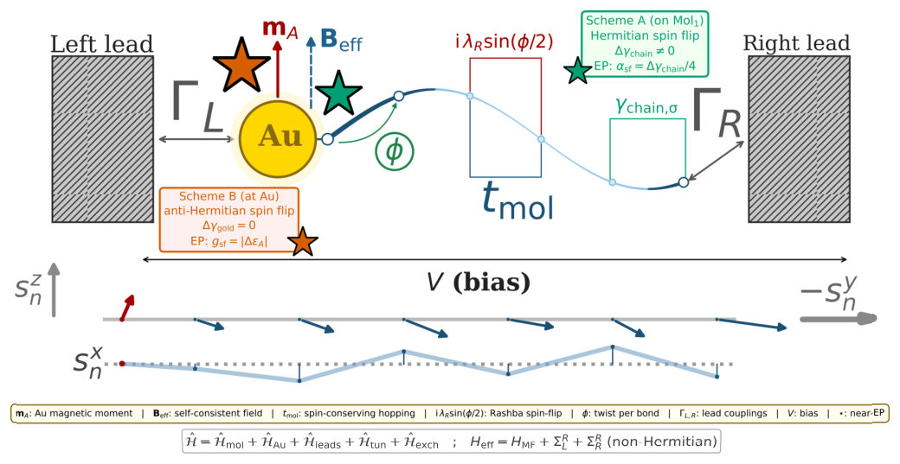
<figcaption class="paper-figure-caption"><b>Fig 1.</b> Figure 1. Schematic of the spinterface model and its two exceptional-point schemes. The junction comprises a gold atom (Au) with a local mean-field moment mA, a chiral Rashba chain of L sites with nearest-neighbour hopping tmol and Rashba spin-flip amplitude iλR sin(φ/2), and two non-magnetic leads coupled through ΓL,R under an applied bias V . The two coloured EP stars mark the two coalescing subspaces: red Scheme B at the gold site (anti-Hermitian spin flip, spin-symmetric leads, EP at gsf = |∆εA|) and green Scheme A at the first molecular site (Hermitian spin flip, spin-dependent chain broadening γchain,σ, EP at αsf = ∆γchain/4). The dark-red box states the algebraic obstruction to mixing the...</figcaption>
</figure>
<figure class="paper-figure-card">
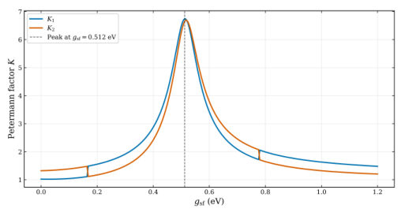
<figcaption class="paper-figure-caption"><b>Fig 2.</b> Figure 3. Gold-level near-EP Petermann factor. Both K1 and K2 rise sharply at the near-EP (vertical dashed line) and fall again outside. The peak value is K ≈6.7, which is con- sistent with the near-EP residual gap of ∼0.19 eV: a strict EP would have K →∞, but the dressing of the gold doublet by the molecular chain prevents the last bit of coalescence. The divergence is symmetric in gsf −gEP sf , as expected from Kmax ∼∆ε2 eff/δ2 res. Parameters as in Fig. 2.</figcaption>
</figure>
<figure class="paper-figure-card">
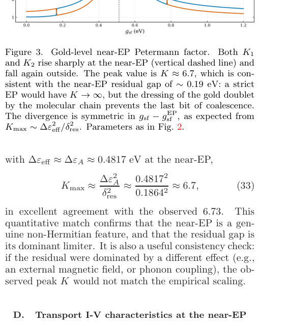
<figcaption class="paper-figure-caption"><b>Fig 3.</b> Figure 4 shows how the near-EP modifies the transport I-V characteristics. Panel (a) shows the spin-resolved currents I↑and I↓(in µA) at three couplings: below the near-EP (gsf = 0.18 eV), at the near-EP (gsf = 0.51 eV), and above the near-EP (gsf = 0.79 eV). Below the near- EP, the solid and dashed curves for I↑and I↓are visibly separate, indicating spin-resolved transport. At the near- EP, the two curves sit nearly on top of each other, indi- cating the coalescence of the two spin channels. Above the near-EP, they split again, but with a different sign structure. Panel (b) shows the current polarisation PJ(V ) for the three couplings. Below the near-EP, PJ is large and positive across the...</figcaption>
</figure>
<figure class="paper-figure-card">
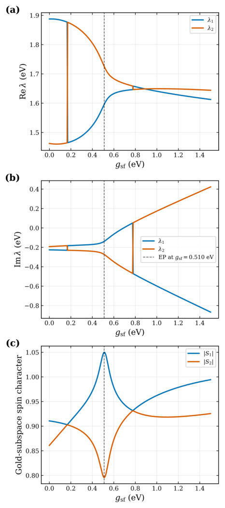
<figcaption class="paper-figure-caption"><b>Fig 4.</b> Figure 2. Gold-level near-EP eigenpair tracking. (a) Real parts of the two gold-like eigenvalues as a function of the spin- flip coupling gsf. The two branches approach each other, reach a minimum separation at the near-EP (vertical dashed line at gsf ≈0.51 eV), and split again. The minimum separation ≈ 0.19 eV is a consequence of the dressing of the gold doublet by the molecular chain. (b) Imaginary parts. Below the near-EP the two eigenvalues have distinct imaginary parts (differential lifetimes of the two spin channels); at the near-EP they merge; above they split again with an exchanged sign structure, the sign reversal occurring at gsf ≈0.7-0.8 eV, in the broken phase just above the...</figcaption>
</figure>
<figure class="paper-figure-card">
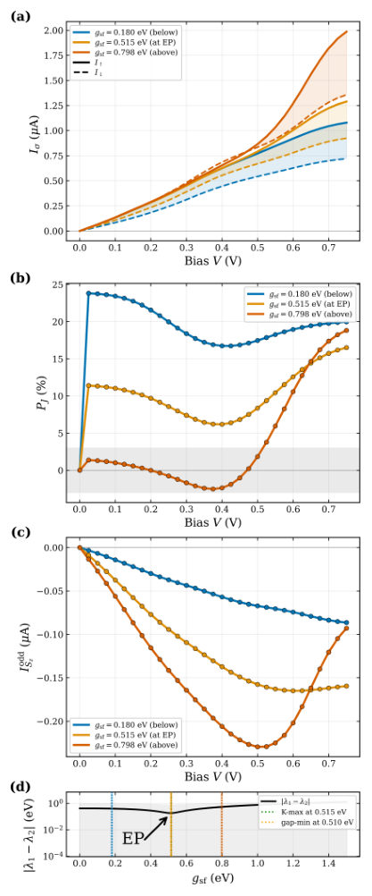
<figcaption class="paper-figure-caption"><b>Fig 5.</b> Figure 4. Exceptional-point modification of the CISS I-V characteristics. (a) Spin-resolved currents I↑(solid) and I↓ (dashed), in µA, vs. bias V at three couplings: below the near-EP (gsf = 0.18 eV, blue), at the near-EP (gsf = 0.51 eV, orange), and above (gsf = 0.79 eV, red). At the near-EP the two spin channels nearly coalesce. (b) Current polarisation PJ(V ) for the same three couplings. Below the near-EP, PJ is large and positive across the bias window; at the near-EP, it is suppressed to ∼8% in the low-bias regime (V ≲0.5 V) with weaker suppression at higher bias; above the near-EP, it recovers at higher bias (V ≳0.7 V) but is strongly suppressed at low bias, becoming slightly negative...</figcaption>
</figure>
</div>

<p><strong>Summary.</strong> This work analyzes the spinterface model for CISS, identifying two distinct, non-mixable near-Exceptional Point (EP) regimes. By using the NEGF formalism, the authors demonstrate that these EPs manifest as unique signatures in spin-selective transport and power-law scaling of the Petermann factor. The findings establish CISS junctions as a promising solid-state platform for non-Hermitian physics.</p>
<p><strong>Why it may be interesting.</strong> The explicit connection between topological features (EPs) in non-Hermitian physics and measurable transport phenomena (chirality-selective spin filtering) provides a concrete, solid-state platform for testing advanced quantum theories.</p>
<details>
<summary>Detailed structure</summary>
<p><strong>Main problem.</strong> The paper investigates the behavior of chirality-induced spin selectivity (CISS) when the effective non-Hermitian Hamiltonian becomes singular, corresponding to an Exceptional Point (EP). It focuses on classifying and characterizing two distinct, non-mixable near-EP regimes.</p>
<p><strong>Main result.</strong> The model supports two distinct near-EP regimes—a 'gold-level' (Scheme B) and a 'chain-level' (Scheme A)—which are physically separated by an algebraic obstruction. These EPs provide a solid-state platform for studying non-Hermitian spectral physics.</p>
<p><strong>Method.</strong> The analysis uses the Non-Equilibrium Green's Function (NEGF) framework to derive an effective non-Hermitian Hamiltonian. Key diagnostics include analyzing the Petermann factor scaling and comparing observed EP locations to bare theoretical predictions.</p>
<p><strong>Model / system.</strong> The system is the spinterface model applied to molecular junctions, involving a central molecular region coupled to leads (gold site and molecular chain). The Hamiltonian incorporates molecular hopping, electrode coupling, and spin-orbit/exchange interactions.</p>
<p><strong>Key observables.</strong> Chirality-selective transport (conversion from achiral to purely chiral), the Petermann factor ($K_k$), and the ratio between observed and bare EP locations.</p>
<p><strong>Important parameters / regimes.</strong> Rashba coherence length ($\lambda_R$), chain length ($L$), and the specific conditions defining the two schemes (Scheme A: Hermitian, Scheme B: Anti-Hermitian).</p>
<p><strong>Assumptions / limitations.</strong> The analysis relies on the NEGF formalism and the assumption that the two EP regimes are algebraically distinct and cannot be mixed.</p>
<p><strong>Figures summary.</strong> The notes reference figures showing the $L$-dependent effective splitting of the Petermann factor, illustrating collective scaling and the crossover between different physical regimes.</p>
<p><strong>Paper structure.</strong> The paper develops the full Hamiltonian using NEGF, derives the effective non-Hermitian Hamiltonian, identifies the conditions for the two distinct EP schemes (A and B), and then analyzes the resulting transport signatures, including scaling laws and crossover points.</p>
</details>
<details>
<summary>Abstract</summary>
<p>The spinterface model of chirality-induced spin selectivity supports two algebraically distinct near-exceptional-point (EP) regimes, which cannot be mixed. A \emph{gold-level} near-EP involves the two gold spin states under an anti-Hermitian, electrode-mediated spin flip with spin-symmetric dissipative broadening (Scheme~B). A \emph{chain-level} near-EP involves the collective coalescence of the two molecular eigenstates with largest weight on the first molecular site under a Hermitian on-site Rashba spin flip with spin-dependent broadening (Scheme~A). Mixing the diagonal cancellation of one scheme with the off-diagonal structure of the other yields a strictly negative discriminant and admits no EP on any parameter path, making the gold/chain classification exhaustive. At the gold near-EP the spin-flip coupling is chirality-selective, converting achiral spin-valve transport into purely chiral transport across well-defined crossover points. At the chain near-EP the Petermann factor grows as a power law in chain length, with an exponent tunable by the Rashba coherence length and non-monotonic in the Rashba strength, reflecting a balance between coherent enhancement and progressive breakdown of the Scheme-A condition. Both near-EPs are dressed versions of the ideal two-state EP, and the ratio between observed and bare EP locations measures the delocalisation of the coalescing pair, providing a fit-free diagnostic of the mechanism. These results identify CISS junctions as a solid-state platform for non-Hermitian spectral physics.</p>
</details>
<p><sub><a href="#top">↑ back to top</a></sub></p>

<p><a id="paper-2610.36706"></a></p>
<h3 id="bright-solitons-in-non-hermitian-systems-exploring-the-interplay-of-math999math-symmetry-and-wadati-structure"><a href="http://arxiv.org/abs/2610.36706v1">Bright Solitons in Non-Hermitian systems: Exploring the interplay of $\mathcal{PT}$ Symmetry and Wadati Structure</a></h3>
<p><strong>Authors:</strong> Sathyanarayanan Chandramouli, Ricardo Carretero-González, Dimitrios J. Frantzeskakis, Panayotis G. Kevrekidis<br>
<strong>Type:</strong> theory · <strong>Category:</strong> other · <strong>PDF:</strong> <a href="https://arxiv.org/pdf/2610.36706v1">https://arxiv.org/pdf/2610.36706v1</a><br>
<strong>Analysis basis:</strong> full PDF text, analyzed in chunks
<strong>Topic relevance:</strong> <code>driven-dissipative phase transition</code> <strong>3/5</strong> · <code>Keldysh / 2PI / non-Gaussian methods</code> <strong>2/5</strong> · <code>methods for driven-dissipative</code> <strong>2/5</strong> · <code>non-equilibrium universality</code> <strong>2/5</strong> · <code>analog quantum simulation</code> <strong>1/5</strong> · <code>correlated / nonlocal dissipation</code> <strong>1/5</strong></p>
<div class="figure-strip-hint">↔ Scroll figures horizontally</div>
<div class="paper-figures-scroll">
<figure class="paper-figure-card">
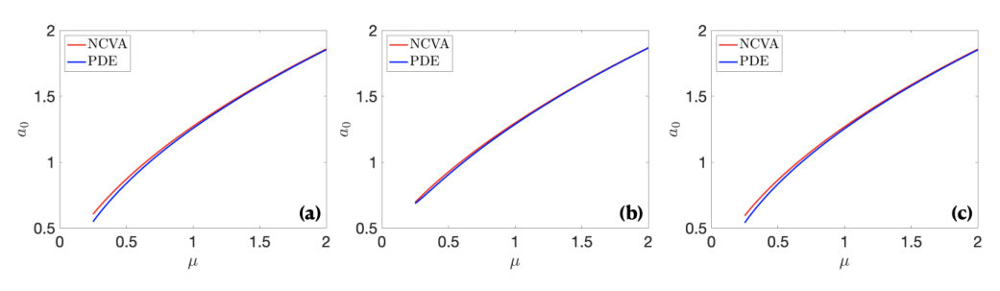
<figcaption class="paper-figure-caption"><b>Fig 1.</b> FIG. 1. The panels illustrate continuous families of solitary waves as characterized by the soliton amplitude as a function of the soliton frequency µ for: (a) the PT -symmetric Wadati potential function [see Eq. (4)] with α = 1, (b) the PT -symmetric potential [see Eq. (5)] with α = 1, and (c) the non-PT -symmetric Wadati potential function [see Eq. (6)]. The other system parameters are fixed to α = 1, x0 = 2.75, and Γ = 0.1.</figcaption>
</figure>
<figure class="paper-figure-card">
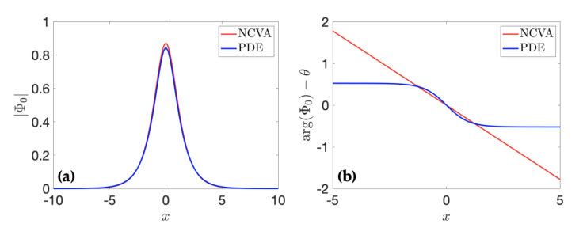
<figcaption class="paper-figure-caption"><b>Fig 2.</b> FIG. 2. Representative bright mode for the NLS with a PT -symmetric Wadati potential (blue) compared with its NCVA counterpart (red) for α = 1 and µ = 0.5. Panels (a) and (b) depict, respectively, the corresponding wavefunction amplitudes and phases</figcaption>
</figure>
<figure class="paper-figure-card">
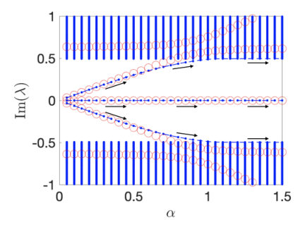
<figcaption class="paper-figure-caption"><b>Fig 3.</b> FIG. 3. Dependence of the purely imaginary eigenvalues, Im(λ), on the strength parameter α of the PT -symmetric Wadati potential. PDE eigenvalues are shown as blue dots and their NCVA counterparts as red circles. The translational eigenvalues, with arrows indicating their motion as α increases, asymptotically approach the edges of the continuous spectrum.</figcaption>
</figure>
<figure class="paper-figure-card">
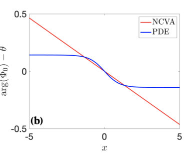
<figcaption class="paper-figure-caption"><b>Fig 4.</b> FIG. 4. Same as in Fig. 2 for a representative bright soliton for a non-Wadati, PT -symmetric potential.</figcaption>
</figure>
<figure class="paper-figure-card">
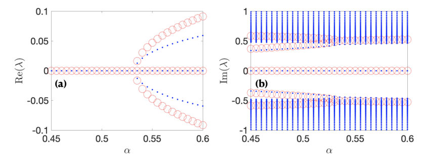
<figcaption class="paper-figure-caption"><b>Fig 5.</b> FIG. 5. Dependence of the spectrum [real part in panel (a) and imaginary part in panel (b)] on the depth parameter α of the PT -symmetric potential. PDE results are shown as blue dots and NCVA eigenvalues as red circles. For smaller α, the spectrum is purely imaginary, with translational eigenmodes approaching the edges of the continuous spectrum.</figcaption>
</figure>
</div>

<p><strong>Summary.</strong> This paper analyzes bright solitons in non-Hermitian optical systems governed by the NLS equation, classifying potentials based on $\mathcal{PT}$ symmetry and Wadati structure. Using a combination of theoretical classification and a non-conservative variational approximation, the authors demonstrate that soliton stability is highly sensitive to these symmetries. The findings highlight the critical role of these mathematical structures in determining the existence of stable localized states.</p>
<p><strong>Why it may be interesting.</strong> This work is highly relevant to open quantum systems and quantum optics, as it provides a rigorous mathematical framework for understanding stable localized wave packets (solitons) in systems with gain and loss, a hallmark of non-Hermitian physics.</p>
<details>
<summary>Detailed structure</summary>
<p><strong>Main problem.</strong> The study systematically investigates the existence and stability of optical solitons in non-Hermitian potentials by analyzing the interplay between $\mathcal{PT}$ symmetry and the Wadati structure.</p>
<p><strong>Main result.</strong> Continuous families of bright solitons persist across $\mathcal{PT}$-symmetric and Wadati sectors, but small departures from the Wadati limit in non-$\mathcal{PT}$-symmetric potentials suggest the generic loss of these continuous families.</p>
<p><strong>Method.</strong> The authors employ a classification scheme into four symmetry-defined potential cases and complement this with a low-dimensional, non-conservative variational approximation method.</p>
<p><strong>Model / system.</strong> The system is modeled by the focusing nonlinear Schrödinger (NLS) equation with a complex localized potential, $i\Psi_t + \frac{1}{2}\Psi_{xx} + [V_R(x) + i V_I(x)] \Psi + |\Psi|^2\Psi = 0$.</p>
<p><strong>Key observables.</strong> Existence and stability of bright solitons, soliton intensity, and the trace of the variational Jacobian matrix.</p>
<p><strong>Important parameters / regimes.</strong> The classification depends on the presence or absence of $\mathcal{PT}$-symmetry and Wadati structure within the potential $V(x)$.</p>
<p><strong>Assumptions / limitations.</strong> The analysis relies on the non-conservative variational approximation (NCVA) to reduce the PDE dynamics to a set of coupled ODEs governing soliton parameters.</p>
<p><strong>Figures summary.</strong> Figures illustrate the persistence of continuous soliton families in specific symmetry sectors and show quantitative/qualitative discrepancies between the NCVA and full PDE eigenmodes.</p>
<p><strong>Paper structure.</strong> The paper progresses by introducing the NLS model, developing the variational description, analyzing soliton existence across the four symmetry quadrants, and concluding with stability insights.</p>
</details>
<details>
<summary>Abstract</summary>
<p>In this study, we revisit the subject of optical solitons in non-Hermitian potentials. For the underlying model of the focusing nonlinear Schrödinger equation with a complex localized potential, we offer a classification of such models into four canonical cases. These correspond to (a) $\mathcal{PT}$-symmetric Wadati potentials, (b) $\mathcal{PT}$-symmetric non-Wadati potentials, (c) Non-$\mathcal{PT}$ but Wadati potentials, and (d) complex potentials with neither $\mathcal{PT}$ nor Wadati symmetries. We study the existence and stability of optical solitons across prototypical model variations spanning all four relevant quadrants. We complement such an investigation with a low-dimensional effective description based on a non-conservative variational approximation method. The variational framework is assessed in terms of its ability to represent the structural properties and bifurcations of solutions. {Our results suggest that continuous families of bright solitons persist across sectors (a)--(c). For non-$\mathcal{PT}$-symmetric potentials, small departures from the Wadati limit, corresponding to sector (d), suggest the loss of continuous families of bright-solitons including, more specifically, the possibility of the generic absence of single-humped localized states. The corresponding variational analysis is broadly consistent with these observations. We also highlight the usefulness and limitations for such variational approaches in describing bright solitons in the presence of non-Hermitian potentials.</p>
</details>
<p><sub><a href="#top">↑ back to top</a></sub></p>

<p><a id="paper-2610.37248"></a></p>
<h3 id="wavefunction-templated-metamaterials"><a href="http://arxiv.org/abs/2610.37248v1">Wavefunction-templated metamaterials</a></h3>
<p><strong>Authors:</strong> Yutao Chen, Tao Xiao, Jing Li, Aodong Li, Biye Xie<br>
<strong>Type:</strong> both · <strong>Category:</strong> other · <strong>PDF:</strong> <a href="https://arxiv.org/pdf/2610.37248v1">https://arxiv.org/pdf/2610.37248v1</a><br>
<strong>Analysis basis:</strong> full PDF text, analyzed in chunks
<strong>Topic relevance:</strong> <code>analog quantum simulation</code> <strong>3/5</strong> · <code>interference shaping light</code> <strong>3/5</strong> · <code>methods for driven-dissipative</code> <strong>2/5</strong> · <code>correlated / nonlocal dissipation</code> <strong>1/5</strong> · <code>driven-dissipative phase transition</code> <strong>1/5</strong></p>
<div class="figure-strip-hint">↔ Scroll figures horizontally</div>
<div class="paper-figures-scroll">
<figure class="paper-figure-card">
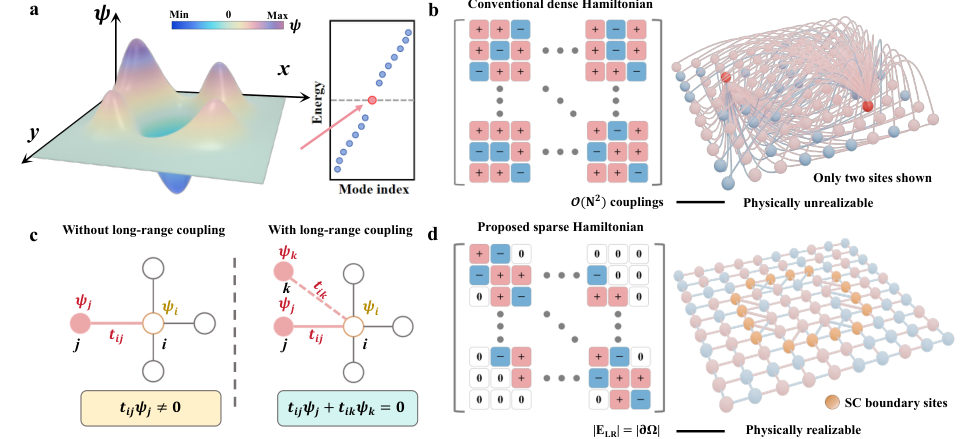
<figcaption class="paper-figure-caption"><b>Fig 1.</b> Figure 1. Boundary-law-guided realization of metamaterials with prescribed eigenstates. a, Eigenstate</figcaption>
</figure>
<figure class="paper-figure-card">
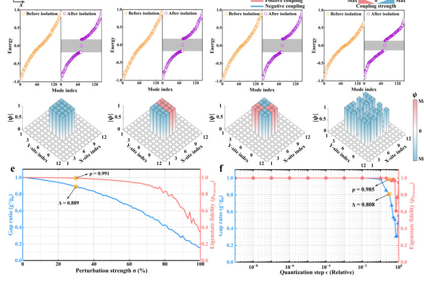
<figcaption class="paper-figure-caption"><b>Fig 2.</b> Figure 2. Prescribed eigenstates, spectral isolation and robustness in tight-binding lattices. a–d, Re-</figcaption>
</figure>
<figure class="paper-figure-card">
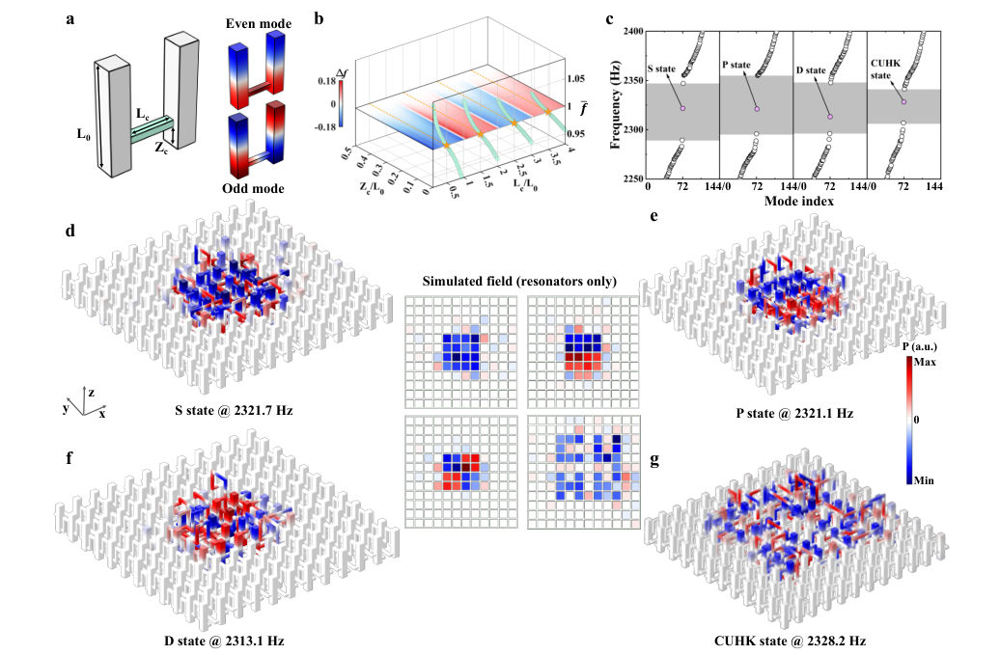
<figcaption class="paper-figure-caption"><b>Fig 3.</b> Figure 3. Mapping sparse Hamiltonians to continuum acoustic eigenstates. a, Two-cavity building</figcaption>
</figure>
<figure class="paper-figure-card">
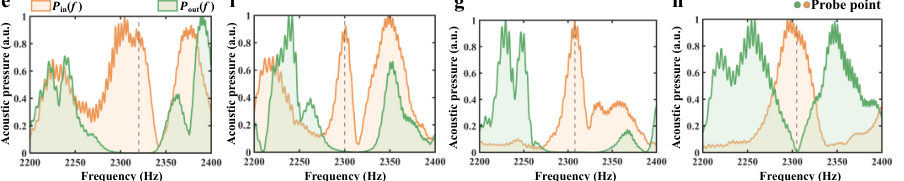
<figcaption class="paper-figure-caption"><b>Fig 4.</b> Figure 4. Experimental observation and in-gap spectroscopy of prescribed acoustic states. a–d, Ex-</figcaption>
</figure>
</div>

<p><strong>Summary.</strong> This paper introduces 'wavefunction-templated metamaterials,' a method to engineer physical structures whose eigenstates match a user-defined spatial profile. By controlling the Hamiltonian's sparsity and spectral parameters, the authors successfully demonstrated the realization and spectral isolation of these target states in both theoretical lattices and physical acoustic systems.</p>
<p><strong>Why it may be interesting.</strong> This work provides a powerful, constructive tool for designing quantum/wave systems by specifying the desired quantum state rather than the underlying physical geometry, which is highly relevant for quantum optics and engineered wave dynamics.</p>
<details>
<summary>Detailed structure</summary>
<p><strong>Main problem.</strong> The core problem is to reverse the conventional design paradigm in metamaterials: instead of designing a structure (Hamiltonian) to yield specific eigenmodes, the authors aim to prescribe a desired field distribution ($\psi_0$) and engineer a physically realizable structure that hosts it as a spectrally isolated eigenstate.</p>
<p><strong>Main result.</strong> They established a framework to realize gap-isolated eigenstates with arbitrary spatial profiles in sparse, physically implementable Hamiltonians, successfully demonstrating this concept in both discrete lattice models and continuum acoustic metamaterials.</p>
<p><strong>Method.</strong> The method involves constructing a sparse Hamiltonian that enforces local destructive-interference conditions dictated by the target wavefunction, followed by spectral reshaping within a parameterized subspace to open a protective spectral gap.</p>
<p><strong>Model / system.</strong> The system is modeled using tight-binding Hamiltonians on discrete lattices, applicable to photonic, acoustic, thermal, and electrical-circuit metamaterials. The concept was extended to full-wave simulations of acoustic metamaterials fabricated via 3D printing.</p>
<p><strong>Key observables.</strong> Spectral gap ($g(	heta)$), the field distribution of the eigenstate ($\psi_0$), and the measured acoustic pressure response ($P_{in}(f)$ vs $P_{out}(f)$).</p>
<p><strong>Important parameters / regimes.</strong> The required nonlocality is determined solely by the number of 'single-contact (SC) boundary sites,' independent of the lattice size.</p>
<p><strong>Assumptions / limitations.</strong> The construction relies on enforcing local destructive-interference conditions, and the continuum transition required imposing an additional constraint on on-site energies.</p>
<p><strong>Figures summary.</strong> Figures illustrate the Hamiltonian construction, spectral gap opening, and the successful experimental observation of prescribed orbital-like states (S, P, D, CUHK) in fabricated acoustic metamaterials.</p>
<p><strong>Paper structure.</strong> The paper progresses from theoretical formulation in discrete lattices (Hamiltonian construction, spectral reshaping) to numerical validation, and finally to experimental realization and measurement in physical acoustic metamaterials.</p>
</details>
<details>
<summary>Abstract</summary>
<p>Metamaterials, which store, guide and emit waves through their eigenmodes, have enabled the development of devices with unprecedented functionalities. Yet the spatial profiles of conventional metamaterials' eigenmodes are typically determined by their pre-determined structures (Hamiltonians). In this work, we introduce `wavefunction-templated metamaterials', a class of physically realizable metamaterials hosting diverse prescribed, spectrally isolated eigenstates. The resulting Hamiltonian geometries obey a boundary law, with the required nonlocality determined solely by single-contact boundary sites, independent of the state interior or lattice size. The sparse Hamiltonians are then Hermitianized, followed by spectral reshaping to open a protective gap around the target eigenstate. We validate our approach in discrete lattices and acoustic metamaterials. Although demonstrated in acoustics, the principle can be applied to thermal, electrical-circuit and photonic metamaterials.</p>
</details>
<p><sub><a href="#top">↑ back to top</a></sub></p>

<p><a id="paper-2610.36498"></a></p>
<h3 id="learning-multiscale-dynamics-of-nanoparticle-self-assembly"><a href="http://arxiv.org/abs/2610.36498v1">Learning Multiscale Dynamics of Nanoparticle Self-Assembly</a></h3>
<p><strong>Authors:</strong> Shuaifeng Li, Puquan Pan, Jonas Hallstrom, Nicholas Kotov, Paul Bogdan, Qian Chen, Xiaoming Mao<br>
<strong>Type:</strong> both · <strong>Category:</strong> statistical mechanics · <strong>PDF:</strong> <a href="https://arxiv.org/pdf/2610.36498v1">https://arxiv.org/pdf/2610.36498v1</a><br>
<strong>Analysis basis:</strong> full PDF text, analyzed in chunks
<strong>Topic relevance:</strong> <code>methods for driven-dissipative</code> <strong>3/5</strong> · <code>quantum measurements</code> <strong>2/5</strong> · <code>Frenkel-Kontorova</code> <strong>1/5</strong> · <code>Keldysh / 2PI / non-Gaussian methods</code> <strong>1/5</strong> · <code>driven-dissipative phase transition</code> <strong>1/5</strong> · <code>non-equilibrium universality</code> <strong>1/5</strong></p>
<div class="figure-strip-hint">↔ Scroll figures horizontally</div>
<div class="paper-figures-scroll">
<figure class="paper-figure-card">
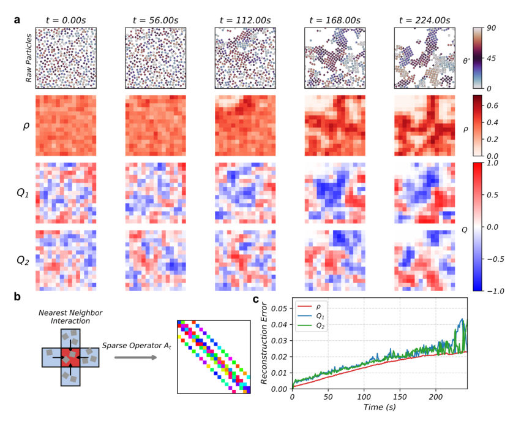
<figcaption class="paper-figure-caption"><b>Fig 1.</b> FIG. 1. Time-varying autoregressive modeling of nanoparticle self-assembly from LPTEM data. a From top row to bottom row, representative snapshots of the raw particle positions colored by orientation angle θ and the corresponding coarse-grained continuous Eulerian fields, ρ, Q1 and Q2, at five time points (t = 0, 56, 112, 168, and 224 s) are shown in patches. b Schematic of the nearest-neighbor interaction constraint, resulting in a block-banded operator At. c Reconstruction error as a function of time for ρ, Q1 and Q2.</figcaption>
</figure>
<figure class="paper-figure-card">
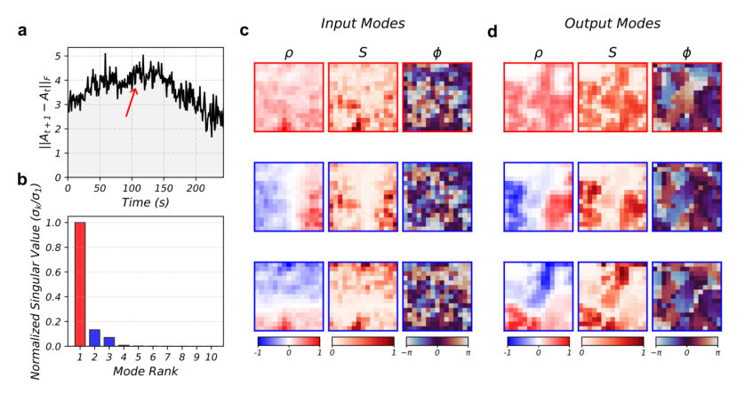
<figcaption class="paper-figure-caption"><b>Fig 2.</b> FIG. 2. Long-timescale collective dynamics revealed by spectral analysis of the cumulative propagator. a Operator volatility ∥At+1 −At∥F as a function of time, with a peak indicated by a red arrow at around 110 seconds signifying a switch in dynamics. b Normalized singular value spectrum of the cumulative propagator Φ = QT t At, demonstrating that the long-timescale collective dynamics are dominated by only three modes. c, d Input and output spatial modes 1 through 3, displayed from top to bottom, in terms of density ρ, orientational order strength S, and phase angle ϕ.</figcaption>
</figure>
<figure class="paper-figure-card">
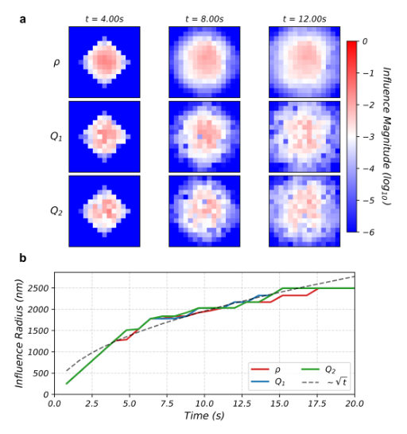
<figcaption class="paper-figure-caption"><b>Fig 3.</b> FIG. 3. Spatiotemporal impulse response of the nanoparticle self-assembly system. a Spatial maps of the impulse response to a localized density perturbation at the center of the field, shown for all three fields at t = 4.0, 8.0, and 12.0 s. b Influence radius as a function of time for each field, alongside the theoretical R ∼ √</figcaption>
</figure>
<figure class="paper-figure-card">
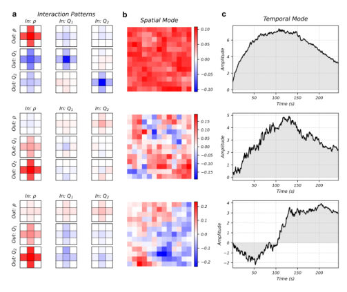
<figcaption class="paper-figure-caption"><b>Fig 4.</b> FIG. 4. Top three interaction patterns extracted from CP decomposition. Each row presents one rank-one com- ponent extracted by CP decomposition of the interaction ten- sor I ∈R45×N×T . a The 3 × 3 interaction stencils for all nine input-output field pairings (ρ, Q1, Q2), showing the normal- ized spatial coupling pattern for each component. b The spa- tial mode, indicating the macroscopic regions of the assembly where each interaction mechanism is most strongly active. c The temporal amplitude, showing when each mechanism is engaged during the self-assembly.</figcaption>
</figure>
<figure class="paper-figure-card">
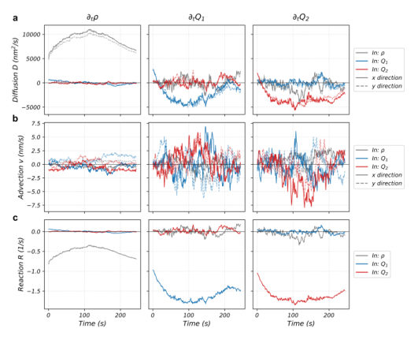
<figcaption class="paper-figure-caption"><b>Fig 5.</b> FIG. 5. Extraction of continuum PDE coefficients from spatial moments of the learned operators. Time- resolved PDE coefficients recovered from the spatial moments of the learned 3 × 3 evolution stencils and averaged over spa- tial patches, organized by output field (columns: ∂tρ, ∂tQ1, ∂tQ2) and coefficient type (rows: diffusion D, advection v, reaction R). Line color denotes the input field (ρ: gray, Q1: blue, Q2: red); solid and dashed lines distinguish the x and y spatial directions for D and v. a The density self-diffusion is positive and grows steadily before declining as clusters con- solidate. In the orientational order equations (∂tQ1, ∂tQ2), the self-diffusion coefficients are...</figcaption>
</figure>
</div>

<p><strong>Summary.</strong> This work introduces a novel physics-informed machine learning framework to decipher the complex dynamics of nanoparticle self-assembly directly from LPTEM videos. By modeling the evolution of coarse-grained fields using a time-varying autoregressive operator, the authors achieve high interpretability. This allows for the extraction of underlying partial differential equations, providing a predictive tool for designing functional nanostructures.</p>
<p><strong>Why it may be interesting.</strong> The method provides a powerful, data-driven bridge between noisy, high-dimensional experimental trajectories and continuum field theories, which is highly relevant for modeling complex many-body dynamics in non-equilibrium systems.</p>
<details>
<summary>Detailed structure</summary>
<p><strong>Main problem.</strong> Understanding the complex, multiscale, and environment-dependent dynamics of nanoparticle self-assembly from stochastic, real-time experimental observations.</p>
<p><strong>Main result.</strong> The framework successfully learns dynamics capturing both long-time phase transitions and short-timescale local evolution, extracting underlying Partial Differential Equations (PDEs) consistent with physical symmetries.</p>
<p><strong>Method.</strong> A physics-informed, time-varying autoregressive framework is developed to model the evolution of coarse-grained Eulerian fields ($
ho, Q$) using a sparse, nearest-neighbor operator optimized on a matrix manifold.</p>
<p><strong>Model / system.</strong> The system is nanoparticle self-assembly, observed via Liquid-phase transmission electron microscopy (LPTEM). The state is modeled by coupled continuous fields: local density ($
ho$) and orientational order parameters ($Q_1, Q_2$).</p>
<p><strong>Key observables.</strong> Operator volatility (for phase transitions), cumulative propagator spectral decomposition, and extracted PDE coefficients.</p>
<p><strong>Important parameters / regimes.</strong> Time-varying operator $A_t$, regularization parameters ($\lambda_1, \lambda_2, \lambda_3$), and the nearest-neighbor interaction range.</p>
<p><strong>Assumptions / limitations.</strong> The dynamics can be linearly advanced by a time-varying operator $A_t$, and the dominant interactions are short-ranged (nearest-neighbor).</p>
<p><strong>Figures summary.</strong> Figures show raw particle positions alongside coarse-grained Eulerian fields ($
ho, Q_1, Q_2$) at various times, illustrating the structure of the learned nearest-neighbor operator $A_t$.</p>
<p><strong>Paper structure.</strong> The paper introduces the challenge of multiscale dynamics, details the TVAR framework with manifold optimization, analyzes dynamics using operator volatility and propagator decomposition, and concludes by extracting interpretable PDEs.</p>
</details>
<details>
<summary>Abstract</summary>
<p>Nanoparticle self-assembly offers a powerful route to programmable functional materials, but its dynamics remain difficult to understand because they arise from multiscale, many-body, and environment-dependent interactions. Liquid-phase transmission electron microscopy (LPTEM) enables real-time observation of these dynamics, yet extracting the underlying physical laws from highly stochastic trajectories remains a significant challenge. Here we develop a physics-informed, time-varying autoregressive framework that learns multiscale self-assembly dynamics directly from LPTEM videos. Continuous Eulerian fields with local density and orientational order are coarse-grained from individual video frames and evolved by a sparse, nearest-neighbor operator optimized over a constrained matrix manifold. This interpretable approach captures long-time large scale phase transitions by tracking operator volatility over time, and short-timescale local evolution and transport rules. Crucially, we extract the underlying partial differential equations, where expected symmetries naturally emerge, enabling the direct inference of fundamental coefficients. Our framework provides a robust, computationally efficient tool for discovering hidden physical mechanisms from observational data, opening a path toward the predictive design of self-assembled nanostructures.</p>
</details>
<p><sub><a href="#top">↑ back to top</a></sub></p>

<p><a id="paper-2610.36053"></a></p>
<h3 id="proximity-induced-giant-majorana-spin-response-in-a-utemath1022math-metal-film-heterostructure"><a href="http://arxiv.org/abs/2610.36053v1">Proximity-Induced Giant Majorana Spin Response in a UTe$_2$-Metal Film Heterostructure</a></h3>
<p><strong>Authors:</strong> Jushin Tei, Makoto Shimizu, Yukio Tanaka, Satoshi Fujimoto, Takeshi Mizushima<br>
<strong>Type:</strong> theory · <strong>Category:</strong> other · <strong>PDF:</strong> <a href="https://arxiv.org/pdf/2610.36053v1">https://arxiv.org/pdf/2610.36053v1</a><br>
<strong>Analysis basis:</strong> full PDF text, analyzed in chunks
<strong>Topic relevance:</strong> <code>Keldysh / 2PI / non-Gaussian methods</code> <strong>3/5</strong> · <code>methods for driven-dissipative</code> <strong>3/5</strong> · <code>correlated / nonlocal dissipation</code> <strong>2/5</strong> · <code>quantum measurements</code> <strong>1/5</strong></p>
<div class="figure-strip-hint">↔ Scroll figures horizontally</div>
<div class="paper-figures-scroll">
<figure class="paper-figure-card">
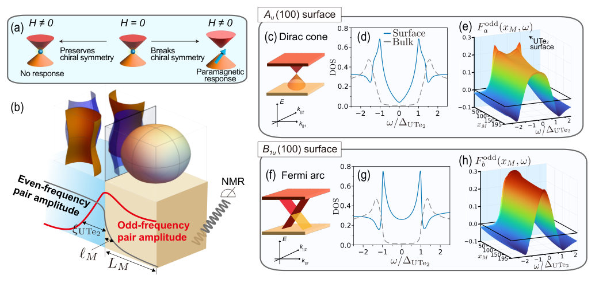
<figcaption class="paper-figure-caption"><b>Fig 1.</b> FIG. 1. (a) Concept of Majorana Ising spin response. (b) Schematic image of the UTe2(100)–normal-metal film heterostructure. Odd-frequency pairing correlations associated with the Majorana surface states penetrate the metal film through the superconducting proximity effect and remain robust against nonmagnetic impurity scattering. NMR measurements on the metal film probe the proximity-enhanced Majorana Ising spin response. (c) Majorana Dirac cone for the Au state on the (100) surface. (d) Corresponding surface DOS. (e) Spatial and frequency dependence of the proximity-induced odd-frequency pair amplitude F odd a in the metal film coupled to UTe2 in the Au state. (f) Majorana Fermi arc for...</figcaption>
</figure>
<figure class="paper-figure-card">
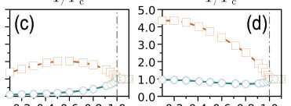
<figcaption class="paper-figure-caption"><b>Fig 2.</b> FIG. 2. Temperature dependence of the dynamical spin- response components Rα(T) for the Au [(a), (b)] and B1u [(c), (d)] states. Panels (a), (c) show the clean limit, and panels (b), (d) the diffusive regime, ℓM/a = 10. The metal thickness is fixed at NM = 40. The blue, orange, and green curves represent the response components along the a, b, and c axes, respectively.</figcaption>
</figure>
<figure class="paper-figure-card">
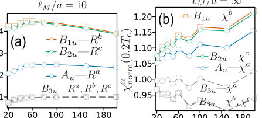
<figcaption class="paper-figure-caption"><b>Fig 3.</b> FIG. 3. (a) Ising enhancement of the dynamical spin response Rα at T = 0.2Tc in the diffusive regime with ℓM/a = 10. (b) Ising enhancement of the uniform static spin susceptibility χα at T = 0.2Tc in the clean limit. In both panels, the metal thickness is varied from NM = 20 to 200. Because the B3u state supports no Majorana surface states on the (100) surface, none of the spin components exhibits an enhancement.</figcaption>
</figure>
<figure class="paper-figure-card">
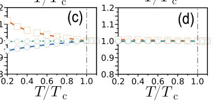
<figcaption class="paper-figure-caption"><b>Fig 4.</b> FIG. 4. Temperature dependence of the uniform static spin susceptibility χα(T) in the metal film for the Au [(a), (b)] and B1u [(c), (d)] states. Panels (a),(c) show the clean limit and panels (b), (d) the diffusive regime, ℓM/a = 10.</figcaption>
</figure>
<figure class="paper-figure-card">
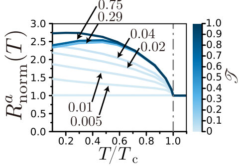
<figcaption class="paper-figure-caption"><b>Fig 5.</b> FIG. 5. Temperature dependence of the normalized Ising spin response Ra norm(T) for the Au state for several effective interface transparencies T . A pronounced Ising enhancement persists even in the tunneling regime.</figcaption>
</figure>
</div>

<p><strong>Summary.</strong> This theoretical work proposes using the superconducting proximity effect in a UTe2/Metal heterostructure to detect Majorana surface states. By measuring the enhanced Ising-anisotropic spin response via NMR, the authors provide a robust, symmetry-sensitive diagnostic tool. The key finding is that this signature persists even when the interface coupling is weak, making the detection scheme highly practical.</p>
<p><strong>Why it may be interesting.</strong> The focus on spin response, symmetry protection, and the use of proximity effects to make surface phenomena measurable via bulk techniques (NMR) is highly relevant to open quantum systems and superconducting interfaces.</p>
<details>
<summary>Detailed structure</summary>
<p><strong>Main problem.</strong> The paper aims to establish an experimentally accessible method to identify Majorana surface states (MSSs) by probing their intrinsic Ising spin response.</p>
<p><strong>Main result.</strong> The superconducting proximity effect transfers Majorana correlations into an adjacent metal film, leading to a giant, symmetry-protected Ising-anisotropic enhancement of the NMR relaxation rate, which is robust even in the tunneling regime.</p>
<p><strong>Method.</strong> Theoretical modeling using anomalous Green's functions and Dyson equations to calculate spin-lattice relaxation rates and static susceptibilities.</p>
<p><strong>Model / system.</strong> The system is a UTe2 superconductor coupled to a normal metal film on the (100) surface. The theory models the proximity-induced odd-frequency spin-triplet correlations.</p>
<p><strong>Key observables.</strong> Spin-lattice relaxation rate (1/T1T), static spin susceptibility ($\chi_\alpha$), and the Ising-anisotropic spin response ($R_\alpha$).</p>
<p><strong>Important parameters / regimes.</strong> Impurity scattering rate ($\gamma_{	ext{imp}}$), proximity coupling strength ($\lambda$), and interface transparency ($T$). The analysis focuses on the diffusive regime.</p>
<p><strong>Assumptions / limitations.</strong> The analysis assumes the neglect of lattice mismatch and interfacial reconstruction, and uses approximations like the self-consistent Born approximation.</p>
<p><strong>Figures summary.</strong> Figures illustrate the spatial/frequency dependence of induced pair amplitudes, and show the temperature dependence of the Majorana spin response ($R_\alpha(T)$) in both clean and diffusive limits, demonstrating enhancement factors.</p>
<p><strong>Paper structure.</strong> The paper develops the theory by first establishing the proximity effect, then calculating the response in the diffusive limit, and finally demonstrating the robustness of the Ising enhancement across varying interface transparencies (tunneling regime).</p>
</details>
<details>
<summary>Abstract</summary>
<p>We establish an experimentally accessible route to identifying Majorana surface states through their intrinsic Ising spin response, using UTe$_2$ as a concrete platform. The key is to extend the Majorana correlations into an adjacent metallic film via the superconducting proximity effect, thereby making the otherwise surface-localized response accessible to NMR measurements. Remarkably, disorder further sharpens the Majorana signature: impurity scattering suppresses the conventional $p$-wave proximity correlations while preserving the Majorana contribution, yielding a giant Ising-anisotropic enhancement of the NMR relaxation rate. This approach also offers a powerful means to distinguish among candidate pairing symmetries.</p>
</details>
<p><sub><a href="#top">↑ back to top</a></sub></p>

<p><a id="paper-2610.37152"></a></p>
<h3 id="cu-intercalation-and-field-driven-filament-formation-in-vertically-aligned-mosmath1031math-memristors"><a href="http://arxiv.org/abs/2610.37152v1">Cu intercalation and field-driven filament formation in vertically aligned MoS$_2$ memristors</a></h3>
<p><strong>Authors:</strong> Touko Lehenkari, Hannu-Pekka Komsa<br>
<strong>Type:</strong> theory · <strong>Category:</strong> numerical methods · <strong>PDF:</strong> <a href="https://arxiv.org/pdf/2610.37152v1">https://arxiv.org/pdf/2610.37152v1</a><br>
<strong>Analysis basis:</strong> full PDF text, analyzed in chunks
<strong>Topic relevance:</strong> <code>methods for driven-dissipative</code> <strong>3/5</strong> · <code>Keldysh / 2PI / non-Gaussian methods</code> <strong>1/5</strong> · <code>driven-dissipative phase transition</code> <strong>1/5</strong> · <code>non-equilibrium universality</code> <strong>1/5</strong></p>
<div class="figure-strip-hint">↔ Scroll figures horizontally</div>
<div class="paper-figures-scroll">
<figure class="paper-figure-card">
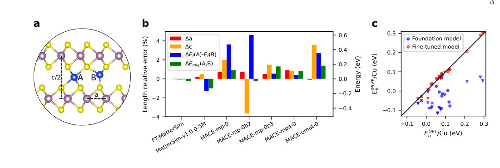
<figcaption class="paper-figure-caption"><b>Fig 1.</b> FIG. 1: Benchmarking MLFFs against DFT. a A side view of the crystal structure of 2H-MoS2 with Cu ions intercalated in A and B sites. Lattice parameters used in the benchmarking of pristine 2H-MoS2 are also shown. b The relative error between MLFF and DFT results for lattice parameters, the difference in formation energy between A and B Cu adatom sites, and the migration barrier between them. The absolute values can be found in Table S1 in SI. c Binding energy per Cu for systems with multiple intercalated Cu ions calculated with the MatterSim foundation model and the finetuned model. Illustration of the structures corresponding to the different symbols and full description of the dataset...</figcaption>
</figure>
<figure class="paper-figure-card">
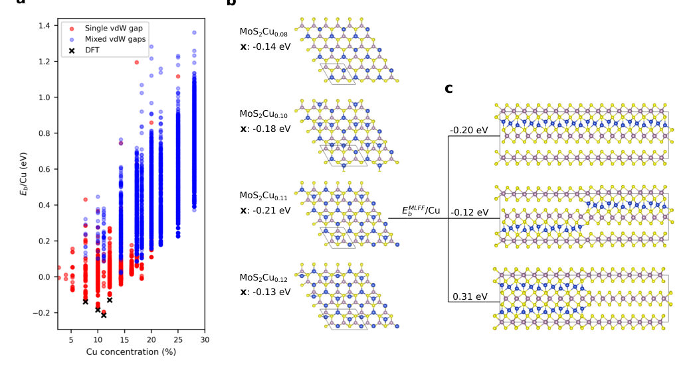
<figcaption class="paper-figure-caption"><b>Fig 2.</b> FIG. 2: Cu clustering structure search. a MLFF calculated binding energies Eb per Cu of 14715 unique structures with their Cu concentrations. The DFT results of the most favorable structures (7.7%, 10.0%, 11.1%, 12.2%) are marked in with black crosses. b Atomic structures of the lowest energy systems and their DFT binding energies. The upper MoS2 layer has been removed to better illustrate the Cu structure within the vdW gap. c Binding energies and atomic structures of MoS2Cu0.11 with differently filled vdW gaps.</figcaption>
</figure>
<figure class="paper-figure-card">
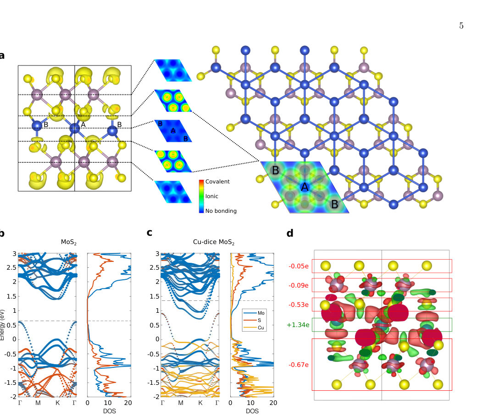
<figcaption class="paper-figure-caption"><b>Fig 3.</b> FIG. 3: Electronic structure of Cu-dice sublattice. a Electron localization of Cu-dice sublattice from side view as well as horizontal 2D slices from the indicated locations resulting in the Cu sublattice shown on the right. Electronic band structure and PDOS of b 2×2 2H-MoS2 and c Cu-dice MoS2 with the Fermi levels marked with dashed lines. d Charge density and Bader charge difference of Cu-dice vs. pristine MoS2 and free Cu. Green represents loss of electron charge density while red indicates gain. The Bader charges for the associated layers are marked on the side of the figure.</figcaption>
</figure>
<figure class="paper-figure-card">
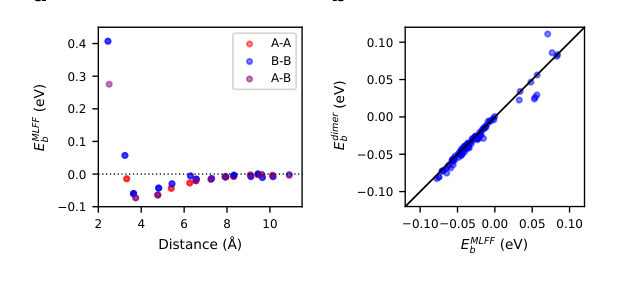
<figcaption class="paper-figure-caption"><b>Fig 4.</b> FIG. 4: Dimer expansion and benchmarking against FT-MLFF. a Dimer binding energy per Cu distance. Site combinations are indicated with different colors. b Comparison of the dimer expansion and FT-MLFF calculated binding energies (per Cu) of randomly generated clusters containing four Cu atoms.</figcaption>
</figure>
<figure class="paper-figure-card">
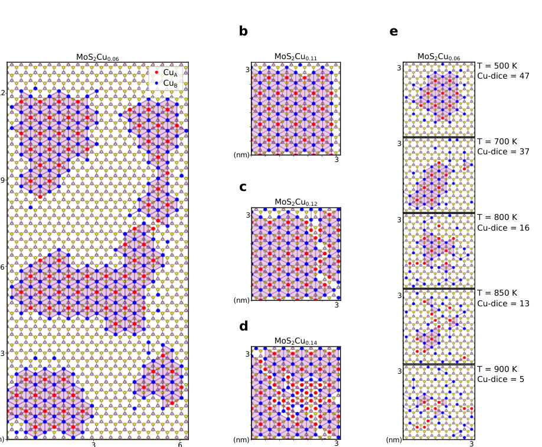
<figcaption class="paper-figure-caption"><b>Fig 5.</b> FIG. 5: Cu-dice cluster formation and breakdown. a-d Resulting clusters from running kMC at room temperature starting from a random Cu allocation corresponding to the indicated Cu concentrations. Distances and triangle configurations corresponding to the Cu-dice clusters are marked in with purple for clarity. e The structures as well as the amount of Cu-dice triangular configurations with different temperatures starting from a random Cu-6% allocation in the simulation box.</figcaption>
</figure>
</div>

<p><strong>Summary.</strong> This work computationally investigates how $   ext{Cu}$ intercalates into $    ext{MoS}_2$ memristors to form conductive filaments. By combining $ ext{DFT}$, $    ext{MLFF}$, and $   ext{kMC}$ simulations, the authors identified a stable, metallic $  ext{Cu}$-dice lattice structure. This provides fundamental insights into the resistive switching mechanism, validating the model against experimental device performance.</p>
<p><strong>Why it may be interesting.</strong> The use of $ ext{kMC}$ simulations to model non-equilibrium, field-driven processes in solid-state devices is a sophisticated application of computational physics, bridging quantum mechanical inputs ($    ext{DFT}$) to macroscopic device behavior.</p>
<details>
<summary>Detailed structure</summary>
<p><strong>Main problem.</strong> To elucidate the atomic-scale mechanism governing conductive filament formation in $  ext{Cu}$-intercalated $ ext{MoS}_2$ memristors, as the exact filament structure is unknown.</p>
<p><strong>Main result.</strong> The most stable structure is $ ext{MoS}<em 0.11>2  ext{Cu}</em>$ atoms, which is capable of forming conductive filaments under applied electric fields.}$ featuring a metallic 'dice lattice' of $    ext{Cu</p>
<p><strong>Method.</strong> A multi-scale computational approach combining Density-Functional Theory ($ ext{DFT}$) for parameterization, Machine Learning Force Fields ($    ext{MLFF}$) for structure enumeration, and Kinetic Monte Carlo ($   ext{kMC}$) simulations for dynamic modeling.</p>
<p><strong>Model / system.</strong> The system is a vertically aligned $    ext{MoS}_2$ film with a $   ext{Cu}$ top electrode, modeled as an electrochemical metallization cell memristor. The simulation tracks $ ext{Cu}$ intercalation and subsequent field-driven atomic migration.</p>
<p><strong>Key observables.</strong> Most stable $  ext{Cu}$ intercalated structure ($  ext{MoS}<em 0.11>2  ext{Cu}</em>$), metallic character, simulated switching speed, and threshold voltage.</p>
<p><strong>Important parameters / regimes.</strong> Electric field ($E$), temperature ($T$), $    ext{Cu}$ concentration (e.g., 11%), and calculated migration barriers ($E_a$).</p>
<p><strong>Assumptions / limitations.</strong> The $    ext{kMC}$ simulation uses a simplified model for the electric field and assumes constant attempt frequencies for $  ext{Cu}$ clusters due to computational constraints.</p>
<p><strong>Figures summary.</strong> Figures benchmark $    ext{MLFF}$ accuracy against $   ext{DFT}$ and illustrate the atomic structure of the stable $   ext{Cu}$-dice lattice. Other figures detail the electronic structure and the $  ext{kMC}$ simulation setup showing field effects.</p>
<p><strong>Paper structure.</strong> The paper progresses from benchmarking advanced ML potentials against DFT, to systematically searching for the global energy minimum structure ($  ext{Cu}$ intercalation), and finally applying $ ext{kMC}$ simulations incorporating external electric fields to model the dynamic filament formation.</p>
</details>
<details>
<summary>Abstract</summary>
<p>Vertically-aligned MoS$_2$ films paired with a Cu top electrode have been used as electrochemical metallization cell memristor devices. The memristive switching has been attributed to the formation of conductive filaments, yet their exact structure has remained elusive. Here we carry out a multi-scale computational study of Cu intercalation, clustering, and field-driven dynamics to eventually model the filament formation under operating conditions. We use density-functional theory results to fine-tune a machine learning force field, and the most important physical phenomena are further distilled into multi-particle kinetic Monte Carlo simulations. By exhaustive enumeration of Cu intercalated structures, we find the most stable structure at MoS$_2$Cu$_{0.11}$ composition, with Cu atoms forming a dice lattice between the MoS$_2$ layers. These structures are shown to exhibit metallic character and can thus form conductive filaments under memristor operation. The simulated switching speed and threshold voltage agree well with the available experimental data. Our results give fundamental insights on the device operation mechanism and guidelines for maximizing switching speed and endurance.</p>
</details>
<p><sub><a href="#top">↑ back to top</a></sub></p>

<p><a id="paper-2610.37402"></a></p>
<h3 id="electric-field-induced-hole-and-electron-type-flat-bands-in-twisted-double-bilayer-graphene"><a href="http://arxiv.org/abs/2610.37402v1">Electric Field-Induced Hole- and Electron-Type Flat Bands in Twisted Double Bilayer Graphene</a></h3>
<p><strong>Authors:</strong> Zhihao Jiang, Dongkyu Lee, Alfred J. H. Jones, Youngju Park, Paulina Majchrzak, Kimberly Hsieh, Chakradhar Sahoo, Thomas S. Nielsen, Kenji Watanabe, Takashi Taniguchi, Philip Hofmann, Yong P. Chen, Jeil Jung, Søren Ulstrup<br>
<strong>Type:</strong> both · <strong>Category:</strong> strongly correlated electrons · <strong>PDF:</strong> <a href="https://arxiv.org/pdf/2610.37402v1">https://arxiv.org/pdf/2610.37402v1</a><br>
<strong>Analysis basis:</strong> full PDF text, analyzed in chunks
<strong>Topic relevance:</strong> <code>analog quantum simulation</code> <strong>3/5</strong> · <code>Keldysh / 2PI / non-Gaussian methods</code> <strong>1/5</strong></p>
<div class="figure-strip-hint">↔ Scroll figures horizontally</div>
<div class="paper-figures-scroll">
<figure class="paper-figure-card">
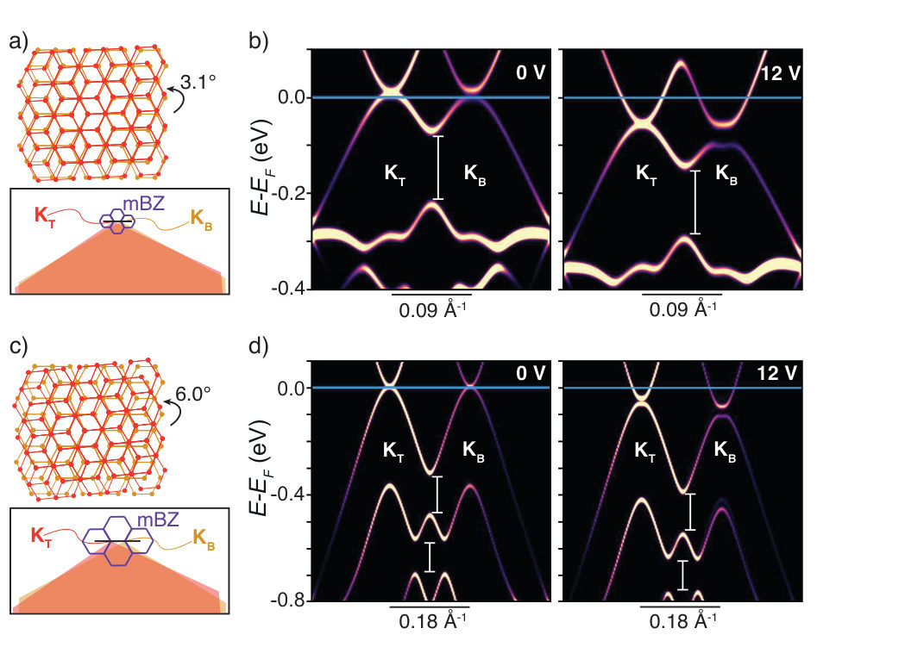
<figcaption class="paper-figure-caption"><b>Fig 1.</b> FIG. 1. Tuning the electronic structure of tDBG with twist angle and electrostatic gating. a)</figcaption>
</figure>
<figure class="paper-figure-card">
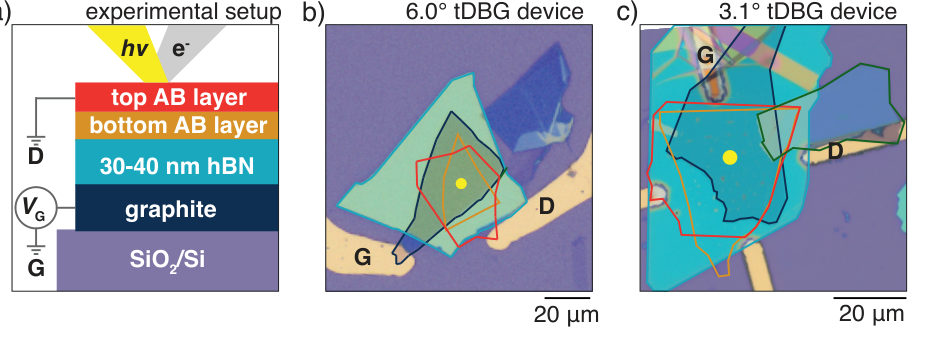
<figcaption class="paper-figure-caption"><b>Fig 2.</b> FIG. 2. Experimental setup and devices. a) Schematic of photoemission experiment and het-</figcaption>
</figure>
<figure class="paper-figure-card">
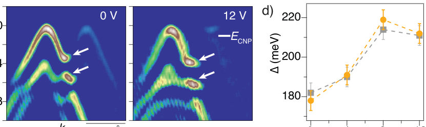
<figcaption class="paper-figure-caption"><b>Fig 3.</b> FIG. 3. Hybridisation and electric-field dependent gaps in 6.0◦tDBG. a) ARPES dispersion along</figcaption>
</figure>
<figure class="paper-figure-card">
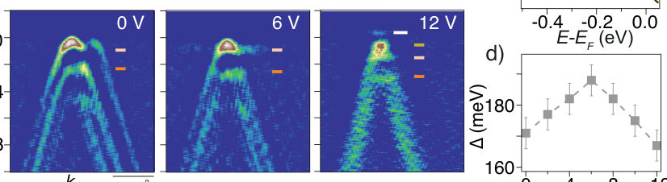
<figcaption class="paper-figure-caption"><b>Fig 4.</b> FIG. 4. Electric field-driven dispersion changes in 3.1◦tDBG. a)-b) ARPES dispersion of hyperbolic</figcaption>
</figure>
<figure class="paper-figure-card">
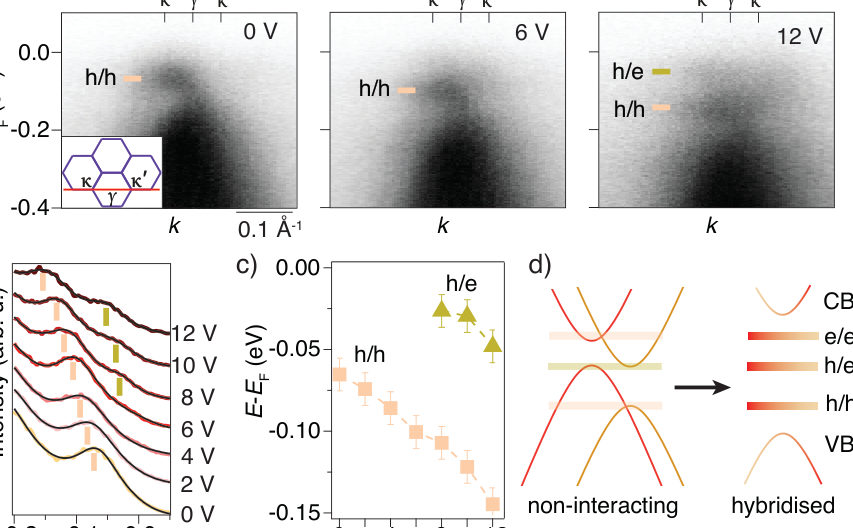
<figcaption class="paper-figure-caption"><b>Fig 5.</b> FIG. 5. Mixed electron- and hole-like flat bands in 3.1◦tDBG. a) ARPES spectra at the stated</figcaption>
</figure>
</div>

<p><strong>Summary.</strong> This paper experimentally and theoretically explores how applying an electric field to twisted double bilayer graphene (tDBG) can engineer its electronic structure. Key findings include the emergence of tunable flat bands and hybridization gaps at specific twist angles. This work provides a platform for investigating strongly correlated and potentially topological quantum phenomena in graphene-based heterostructures.</p>
<p><strong>Why it may be interesting.</strong> The observation of tunable flat bands and the potential for realizing excitonic insulator states or topological phases in a tunable solid-state system like graphene is highly relevant to understanding strongly correlated electron physics.</p>
<details>
<summary>Detailed structure</summary>
<p><strong>Main problem.</strong> The study investigates the tunable electronic structures, specifically the formation of flat bands and electron-hole excitations, in twisted double bilayer graphene (tDBG) under the influence of an external electric field.</p>
<p><strong>Main result.</strong> The research demonstrates that applying an electric field and controlling the twist angle can induce flat bands between the valence and conduction band extrema, opening possibilities for studying correlated and topological electronic states.</p>
<p><strong>Method.</strong> The work combines experimental measurements using micro-focused angle-resolved photoemission spectroscopy (microARPES) with theoretical calculations based on extended Hubbard Hamiltonians.</p>
<p><strong>Model / system.</strong> The physical system is twisted double bilayer graphene (tDBG) with twist angles of 3.1° and 6.0°. The electronic structure is tuned by applying an out-of-plane electric field via gating, allowing the study of the 'cross-over regime' where interlayer polarization is significant.</p>
<p><strong>Key observables.</strong> Band dispersion, hybridization gaps, band flattening effects, and the formation of mixed electron-hole flat bands.</p>
<p><strong>Important parameters / regimes.</strong> Twist angles (3.1° and 6.0°), applied electric field/gate voltage (up to 12 V), and the resulting doping levels.</p>
<p><strong>Assumptions / limitations.</strong> The study operates in the 'cross-over regime' of displacement fields and twist angles; some theoretical calculations may not fully capture the gate-voltage-induced band flattening observed experimentally.</p>
<p><strong>Figures summary.</strong> Figures illustrate the mini-Brillouin zones, the ARPES experimental setup, and the electric-field dependence of hybridization gaps and band dispersion for both twist angles.</p>
<p><strong>Paper structure.</strong> The paper systematically presents experimental ARPES data showing gap evolution with gate voltage, correlates these findings with theoretical spectral function calculations, and discusses the implications for correlated and topological physics.</p>
</details>
<details>
<summary>Abstract</summary>
<p>Application of a finite electric field and small twist angle between two graphene bilayers leads to widely tunable electronic structures that support emergent phenomena. Here, we measure the electronic structure of twisted double bilayer graphene with twist angles of 3.1$^{\circ}$ and 6.0$^{\circ}$ using micro-focused angle-resolved photoemission spectroscopy (microARPES) on \textit{in situ} gated samples. At a twist angle of 6.0$^{\circ}$, we find that the dispersion around the valence and conduction band extrema is unchanged compared to separate graphene bilayers, whereas electric field tunable hybridisation gaps and band flattening effects occur at higher binding energies. In the 3.1$^{\circ}$ structure, we find that the resulting superlattice drives dispersion changes around the valence and conduction band edges. Increasing the gate-induced doping in the bottom bilayer leads to the formation of flat bands between the valence band maximum in the bottom bilayer and conduction band minimum in the top bilayer. Our experiments establish combinations of twist angle and electric field that potentially support strong electron-hole excitations and that provide a benchmark for the theoretical description of moderately twisted double bilayer graphene.</p>
</details>
<p><sub><a href="#top">↑ back to top</a></sub></p>

<p><a id="paper-2610.37090"></a></p>
<h3 id="transport-statistics-in-asymmetric-coupled-chaotic-dots-in-series-brownian-motion-model"><a href="http://arxiv.org/abs/2610.37090v1">Transport statistics in asymmetric coupled chaotic dots in series: Brownian motion model</a></h3>
<p><strong>Authors:</strong> Ashutosh Dheer, Santosh Kumar, Jayendra N. Bandyopadhyay<br>
<strong>Type:</strong> theory · <strong>Category:</strong> other · <strong>PDF:</strong> <a href="https://arxiv.org/pdf/2610.37090v1">https://arxiv.org/pdf/2610.37090v1</a><br>
<strong>Analysis basis:</strong> full PDF text, analyzed in chunks
<strong>Topic relevance:</strong> <code>Keldysh / 2PI / non-Gaussian methods</code> <strong>2/5</strong> · <code>methods for driven-dissipative</code> <strong>2/5</strong> · <code>Full counting statistics</code> <strong>1/5</strong> · <code>driven-dissipative phase transition</code> <strong>1/5</strong> · <code>non-equilibrium universality</code> <strong>1/5</strong></p>
<div class="figure-strip-hint">↔ Scroll figures horizontally</div>
<div class="paper-figures-scroll">
<figure class="paper-figure-card">
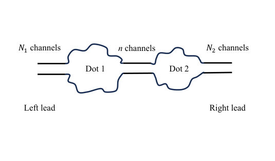
<figcaption class="paper-figure-caption"><b>Fig 1.</b> FIG. 1. Schematic of two chaotic cavities coupled via a junction with n channels and connected</figcaption>
</figure>
<figure class="paper-figure-card">
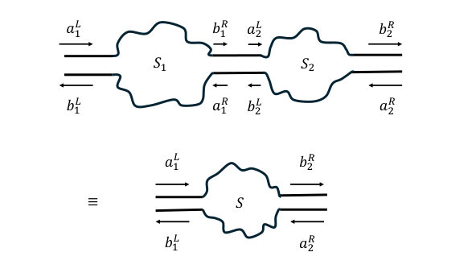
<figcaption class="paper-figure-caption"><b>Fig 2.</b> FIG. 2. The coupled cavity system can be effectively reduced to a single cavity with the corre-</figcaption>
</figure>
<figure class="paper-figure-card">
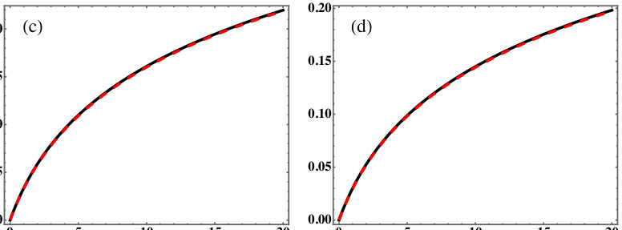
<figcaption class="paper-figure-caption"><b>Fig 3.</b> FIG. 3. Comparison of the phenomenological τ-n relation (32) with the numerically fitted τ-n</figcaption>
</figure>
<figure class="paper-figure-card">
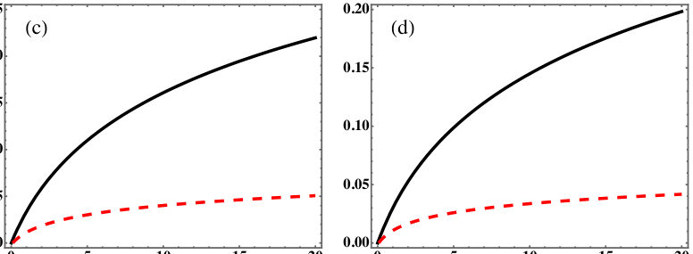
<figcaption class="paper-figure-caption"><b>Fig 4.</b> FIG. 4. Comparison of the phenomenological τ-n relation (32) with the numerically fitted τ-n</figcaption>
</figure>
<figure class="paper-figure-card">
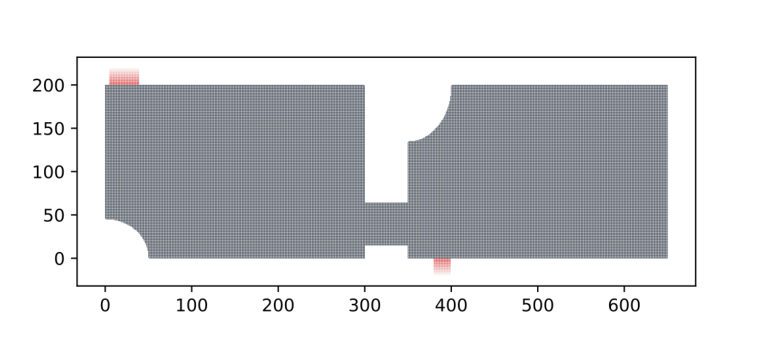
<figcaption class="paper-figure-caption"><b>Fig 5.</b> FIG. 5. Two-quarter Sinai billiards coupled via a junction of finite width and connected to reservoirs</figcaption>
</figure>
</div>

<p><strong>Summary.</strong> This paper analyzes the transport statistics in two coupled chaotic quantum cavities exhibiting a crossover in their underlying random matrix statistics. Using Dyson's Brownian motion model, the authors derive analytical formulas for conductance and shot noise, successfully reproducing ensemble averages across the crossover regime. The work highlights the limitations of the model when calculating variances, suggesting sensitivity to microscopic fluctuations.</p>
<p><strong>Why it may be interesting.</strong> The application of advanced RMT techniques like Dyson's Brownian motion to model transport crossovers in mesoscopic systems provides deep insights into how system connectivity affects quantum transport statistics, which is relevant to open quantum systems.</p>
<details>
<summary>Detailed structure</summary>
<p><strong>Main problem.</strong> The paper investigates the statistics of transport properties, specifically conductance and shot noise, in a quantum system composed of two chaotic cavities coupled in series.</p>
<p><strong>Main result.</strong> Closed-form analytical expressions for the time-dependent averages and variances of conductance and shot noise are derived, showing quantitative agreement with simulations for averages but deviations for variances.</p>
<p><strong>Method.</strong> The study employs Random Matrix Theory (RMT) and models the system's evolution using Dyson's Brownian motion approach, treating the junction width as a time-like parameter.</p>
<p><strong>Model / system.</strong> The system consists of two chaotic quantum cavities coupled via a tunable junction and connected to reservoirs with asymmetric leads. The underlying mathematical framework involves the crossover of the scattering matrix statistics from two independent Circular Unitary Ensembles (2CUE) to a single CUE.</p>
<p><strong>Key observables.</strong> Conductance ($\langle g 
angle$) and shot noise power ($\langle p 
angle$ and $    ext{var}(p)$).</p>
<p><strong>Important parameters / regimes.</strong> Lead asymmetry ($N_1 
eq N_2$), inter-cavity coupling strength (acting as the time-like parameter $   au$), and the crossover regime ($2	ext{CUE} 	o 1	ext{CUE}$).</p>
<p><strong>Assumptions / limitations.</strong> The mapping between the physical junction width and the Brownian time parameter is phenomenological and derived by matching only the ensemble-averaged conductance, limiting the validity for higher-order statistics.</p>
<p><strong>Figures summary.</strong> Figure 1 schematically shows the two coupled cavities. Figures 3 and 4 likely compare the analytically derived average conductance ($\langle g 
angle$) versus the Brownian time ($  au$) against numerical results from the random matrix model.</p>
<p><strong>Paper structure.</strong> The paper develops the theoretical framework using RMT and Brownian motion, derives analytical expressions for observables, establishes a phenomenological mapping between physical parameters and the time parameter, and validates these results against both random matrix simulations and tight-binding calculations.</p>
</details>
<details>
<summary>Abstract</summary>
<p>We study statistics of transport properties in a system of two quantum chaotic cavities coupled in series through a tunable junction and connected to reservoirs with asymmetric leads. Within the random matrix theory framework and in the absence of time-reversal symmetry, the scattering matrix S undergoes a crossover from two independent circular unitary ensembles to a single CUE as the inter-cavity coupling increases. Modeling this crossover using Dyson's Brownian motion approach, with the junction width acting as a time-like parameter, we derive closed-form expressions for the time-dependent averages and variances of conductance and shot noise power for arbitrary lead asymmetry. These analytical results reduce to known expressions in the symmetric and fully coupled limits. The mapping between the Brownian time parameter and the physical junction width is found to be observable-dependent, reflecting the different eigenfunction correlations probed by conductance and shot noise power, and this dependence is examined and separately calibrated for each observable. Validating against random-matrix simulations and tight-binding transport calculations using Kwant, we find quantitative agreement for ensemble-averaged observables throughout the crossover, while variances, being more sensitive to microscopic fluctuations, show deviations from the Brownian-motion predictions.</p>
</details>
<p><sub><a href="#top">↑ back to top</a></sub></p>

<p><a id="paper-2610.37301"></a></p>
<h3 id="hydrodynamic-fluctuations-in-luttinger-liquids"><a href="http://arxiv.org/abs/2610.37301v1">Hydrodynamic fluctuations in Luttinger liquids</a></h3>
<p><strong>Authors:</strong> Alex Levchenko<br>
<strong>Type:</strong> theory · <strong>Category:</strong> strongly correlated electrons · <strong>PDF:</strong> <a href="https://arxiv.org/pdf/2610.37301v1">https://arxiv.org/pdf/2610.37301v1</a><br>
<strong>Analysis basis:</strong> full PDF text, analyzed in chunks
<strong>Topic relevance:</strong> <code>Keldysh / 2PI / non-Gaussian methods</code> <strong>2/5</strong> · <code>correlated / nonlocal dissipation</code> <strong>1/5</strong> · <code>methods for driven-dissipative</code> <strong>1/5</strong> · <code>non-equilibrium universality</code> <strong>1/5</strong> · <code>quantum measurements</code> <strong>1/5</strong></p>
<div class="figure-strip-hint">↔ Scroll figures horizontally</div>
<div class="paper-figures-scroll">
<figure class="paper-figure-card">
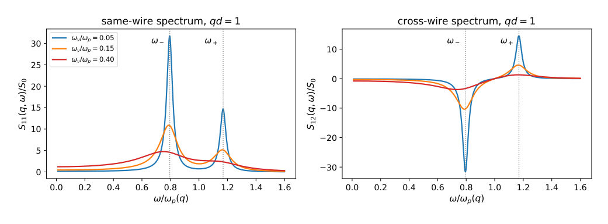
<figcaption class="paper-figure-caption"><b>Fig 1.</b> FIG. 1. Equilibrium density-noise spectra of two coupled wires in the single-fluid regime at qd = 1, for three damping ratios ων/ωp, in units of ωp(q) and S 0 = Tn2q2/ρ ω3 p(q). Left: same-wire spectrum S 11, Eq. (18), showing the plasmon doublet ω∓. Right: cross-wire spectrum S 12: the out-of-phase plasmon produces anticorrelation, the in-phase mode positive correlation, with total weights fixed by the sum rules (19).</figcaption>
</figure>
<figure class="paper-figure-card">
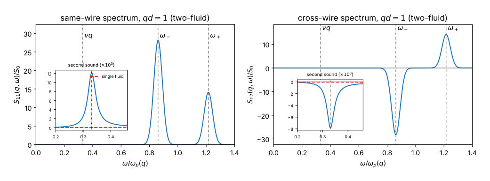
<figcaption class="paper-figure-caption"><b>Fig 2.</b> FIG. 2. Two-fluid density spectra of coupled wires at qd = 1, computed from the stochastic system (20). Frequencies are in units of the plasmon frequency ωp(q) and spectra in units of S 0 = Tn2q2/ρ ω3 p(q); parameters: nd = 5, T/ωp(1/d) = 0.10, vq/ωp(q) = 0.33, K = 0.7, m∗/m0 = 1.4, n∂nv/v = 0.5, τJv/d = 200, and fast dissipation set by the second-sound damping ratios ζ2q2/ρexvq = κexq2/cvvq = 0.05. The plasmon lines are narrower than the second-sound line by a factor of order ρex/ρ; the main panels therefore show the spectra at a finite frequency resolution δω = 0.03 ωp (Gaussian), as in a bandwidth-limited noise measurement, which brings the plasmon peaks to the scale of Fig. 1. Left:...</figcaption>
</figure>
<figure class="paper-figure-card">
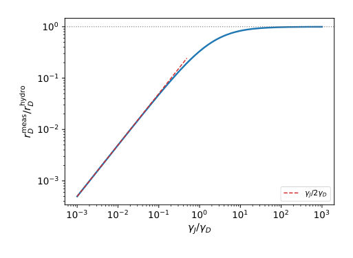
<figcaption class="paper-figure-caption"><b>Fig 3.</b> FIG. 3. Measured dc drag, Eq. (22), versus the ratio of the equilibra- tion rate γJ to the interwire friction rate γD. The hydrodynamic result forms the plateau; single-channel Luttinger liquids at low tempera- ture reside deep on the backscattering-limited tail rmeas D ≃γJ/2e2n2 ∝ e−D/T.</figcaption>
</figure>
<figure class="paper-figure-card">
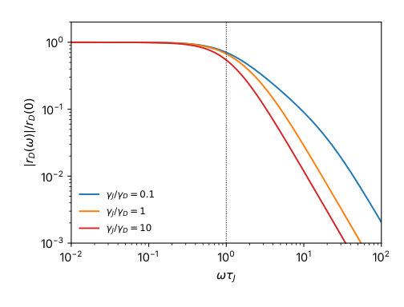
<figcaption class="paper-figure-caption"><b>Fig 4.</b> FIG. 4. Magnitude of the finite-frequency transresistivity, Eq. (26), for three ratios γJ/γD. The knee at ωτJ ∼1 provides direct spec- troscopy of the zero-mode equilibration rate; the plateau height mea- sures the series combination of γJ and γD.</figcaption>
</figure>
<figure class="paper-figure-card">
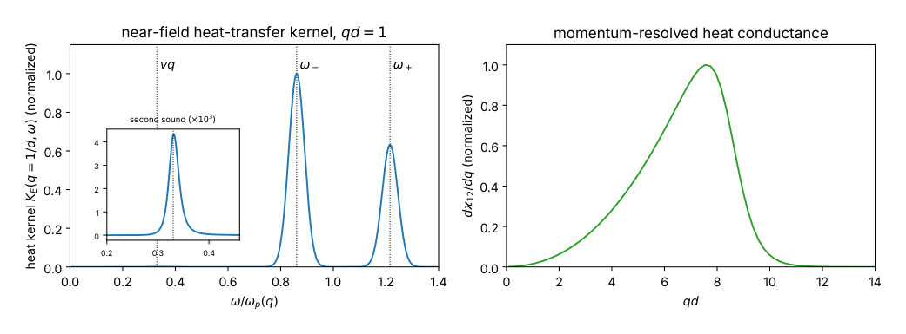
<figcaption class="paper-figure-caption"><b>Fig 5.</b> FIG. 5. Left: near-field heat-transfer kernel KE(q, ω) of the stochastic two-fluid theory at qd = 1, computed from the two-temperature version of Eq. (20) for the parameters of Fig. 2 and shown with the same frequency resolution δω = 0.03 ωp; the plasmon doublet is accompanied by the second-sound peak at ω = vq (inset: intrinsic line shape, magnified). Right: momentum-resolved interwire heat conductance dκ12/dq. With the sharp plasmons of the two-fluid window the integral is dominated by nearly degenerate plasmon pairs at qd ≫1, up to the damping cutoff qd ≃ln( √</figcaption>
</figure>
</div>

<p><strong>Summary.</strong> This paper develops a two-fluid hydrodynamic theory for Luttinger liquids, treating the system as having a superfluid zero mode and a thermal excitation gas. By incorporating fluctuation-dissipation theorems, it predicts unique transport signatures, such as a second-sound peak and activated temperature dependence in the Coulomb drag, providing spectroscopic probes for 1D quantum liquids.</p>
<p><strong>Why it may be interesting.</strong> The explicit derivation of noise terms and the two-fluid picture provides a powerful, non-equilibrium framework for understanding energy and momentum transport in strongly interacting 1D electron systems, connecting superfluid physics to solid-state quantum wires.</p>
<details>
<summary>Detailed structure</summary>
<p><strong>Main problem.</strong> Developing a comprehensive theory for hydrodynamic fluctuations in one-dimensional quantum liquids, specifically Luttinger liquids.</p>
<p><strong>Main result.</strong> The theory establishes a two-fluid description analogous to superfluid He, predicting unique noise sources and calculating transport coefficients like the Coulomb drag resistivity with activated temperature dependence.</p>
<p><strong>Method.</strong> The authors use Onsager reciprocity and the fluctuation-dissipation theorem to extend two-fluid hydrodynamic equations with Langevin fluxes, incorporating novel noise terms from backscattering.</p>
<p><strong>Model / system.</strong> The system is interacting electrons confined to a single-channel wire, modeled as a Luttinger liquid. The dynamics are separated into a superfluid zero mode and a normal gas of thermal excitations.</p>
<p><strong>Key observables.</strong> Dynamic structure factors (showing a second-sound peak), Coulomb drag resistivity, and near-field heat transfer between coupled wires.</p>
<p><strong>Important parameters / regimes.</strong> Low temperatures, backscattering rate (exponentially slow), and the ratio of fluctuation timescales ($\omega	au_J$).</p>
<p><strong>Assumptions / limitations.</strong> The analysis relies on separating fluctuation channels based on frequency scales ($\omega	au_J$) and assumes the validity of linearized stochastic equations.</p>
<p><strong>Figures summary.</strong> Figure 8 illustrates the thermal-channel drag kernel, which is dominated by the sound–plasmon crossover scale.</p>
<p><strong>Paper structure.</strong> The paper reviews the Landau-Lifshitz construction, formulates stochastic two-fluid equations for the Luttinger liquid, and then applies the theory to calculate specific transport phenomena like drag and heat transfer.</p>
</details>
<details>
<summary>Abstract</summary>
<p>We develop the theory of hydrodynamic fluctuations for one-dimensional quantum liquids. At low temperatures the relaxation of interacting electrons in a single-channel wire separates into two classes: equilibration, which changes the numbers of right and left movers through backscattering and is exponentially slow, and thermalization, which redistributes energy and momentum at a fixed number of movers at a power-law rate. This separation of time scales gives the electron liquid a two-fluid description analogous to superfluid $^4$He, with the zero mode of the Luttinger liquid as the superfluid component and the gas of thermal excitations as the normal component. Using Onsager reciprocity and the fluctuation-dissipation theorem, we add Langevin fluxes to the two-fluid hydrodynamic equations, including a mutual-friction noise generated by rare backscattering events that has no counterpart in helium. We apply the theory to Coulomb-coupled quantum wires and calculate the dynamic structure factors, which contain a second-sound peak next to the plasmon doublet; the Coulomb drag resistivity, where intrawire equilibration acts as a bottleneck and turns the hydrodynamic drag into an activated temperature dependence; and the near-field heat transfer between the wires. Mode frequencies, spectral weights, linewidths, and the crossover scales of the transport coefficients are expressed through the thermodynamic properties of the liquid and a few dissipative coefficients, providing spectroscopic and transport probes of two-fluid behavior in one-dimensional quantum systems.</p>
</details>
<p><sub><a href="#top">↑ back to top</a></sub></p>

<p><a id="paper-2610.36738"></a></p>
<h3 id="algebraic-flat-bands-and-even-central-band-chern-numbers-in-a-seven-orbital-hopping-model"><a href="http://arxiv.org/abs/2610.36738v1">Algebraic flat bands and even central-band Chern numbers in a seven-orbital hopping model</a></h3>
<p><strong>Authors:</strong> Weizhuo Xu, Jiachen Qian, Shuaihua Zhang, Yanling Wu, Jun Li<br>
<strong>Type:</strong> theory · <strong>Category:</strong> other · <strong>PDF:</strong> <a href="https://arxiv.org/pdf/2610.36738v1">https://arxiv.org/pdf/2610.36738v1</a><br>
<strong>Analysis basis:</strong> full PDF text, analyzed in chunks
<strong>Topic relevance:</strong> <code>analog quantum simulation</code> <strong>2/5</strong> · <code>Keldysh / 2PI / non-Gaussian methods</code> <strong>1/5</strong></p>
<div class="figure-strip-hint">↔ Scroll figures horizontally</div>
<div class="paper-figures-scroll">
<figure class="paper-figure-card">
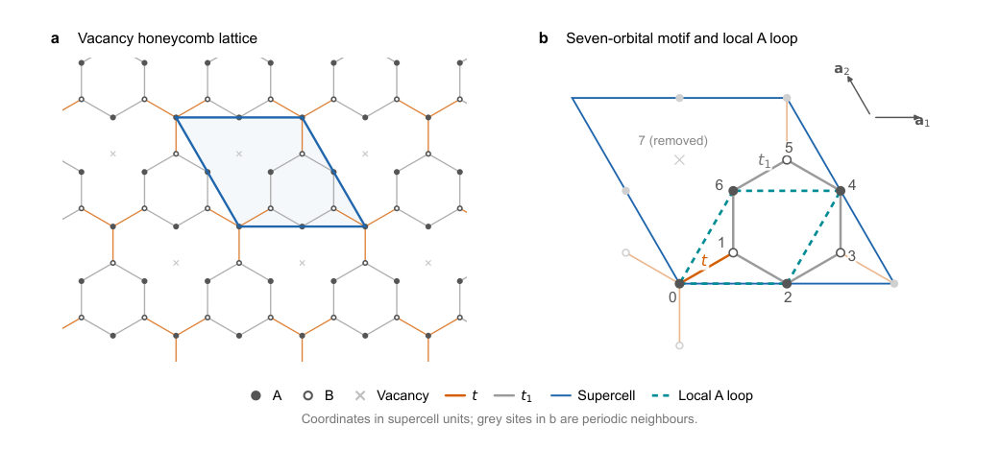
<figcaption class="paper-figure-caption"><b>Fig 1.</b> FIG. 1. Honeycomb-vacancy geometry. (a) Repeated nearest-neighbor network with one supercell highlighted. Filled/open circles denote A/B sites; crosses mark the vacancy. Orange/gray bonds carry t/t1. (b) Orbital 0 lies outside the ring 1, . . . , 6; gray sites are periodic images. The dashed physical A rhombus uses r4 + (1, 0) and Eq. (6). The intracell loop and NNN terms define different hopping extensions.</figcaption>
</figure>
<figure class="paper-figure-card">
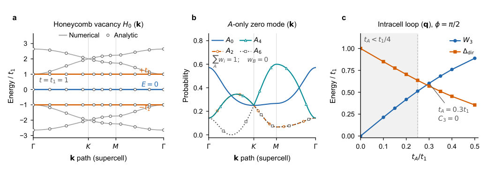
<figcaption class="paper-figure-caption"><b>Fig 2.</b> FIG. 2. Algebraic flat bands and weak-loop dispersion. (a) Physical honeycomb-vacancy parent at t = t1 = 1 along Γ–K–M–Γ, with K = (2π/3, 2π/3) and M = (π, 0). Numerical energies (lines) agree with the analytic spectrum (open circles); the three flat branches are 0 and ±t1. (b) Sublattice-A probabilities of the periodic zero mode on the same path. Their sum is one and the B probability vanishes; some curves overlap. (c) Central bandwidth w3 and minimum adjacent direct gap δ for the intracell-loop model at ϕ = π/2, from a 1922 mesh and grid-seeded local refinement. The marked tA = 0.3t1 point has C3 = 0. Shading denotes the sufficient triviality bound |tA| &lt; |t1|/4, rather than an inferred...</figcaption>
</figure>
<figure class="paper-figure-card">
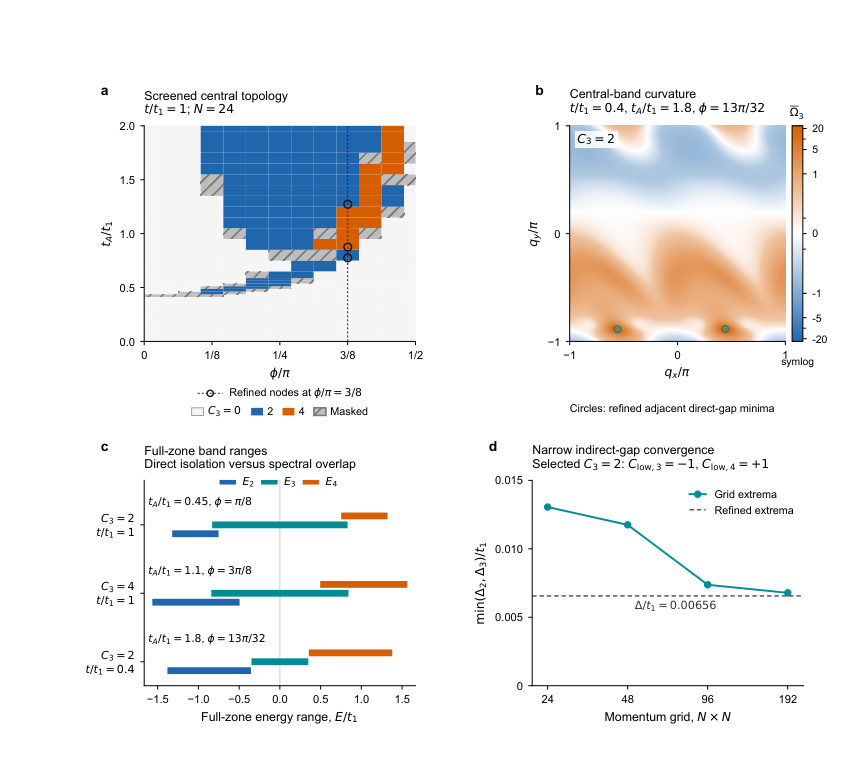
<figcaption class="paper-figure-caption"><b>Fig 3.</b> FIG. 3. Even-Chern topology and spectral isolation in the intracell-loop model. (a) Discrete screening map at t = t1 = 1, with accepted central-band C3 = 0, 2, 4 values and masked unresolved samples. The three open markers on ϕ = 3π/8 are locally resolved paired-contact transitions from Table III; the colored screening cells are not certified boundaries. (b) Full-zone curvature for Eq. (36), using the periodic q torus. The 1922 overlap-plaquette integral is C3 = 2; symbols mark refined lower- and upper-central-gap minima. (c) Refined energy ranges of E2, E3, E4 for a directly isolated C3 = 2 example, a directly isolated C3 = 4 example, and the globally gapped C3 = 2 example; their...</figcaption>
</figure>
<figure class="paper-figure-card">
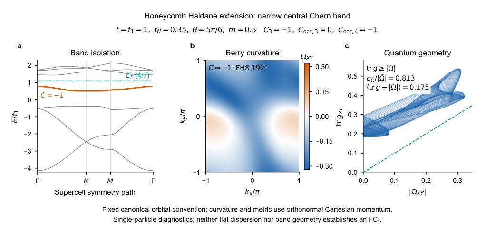
<figcaption class="paper-figure-caption"><b>Fig 4.</b> FIG. 4. Narrower C3 = −1 band in the honeycomb NNN model, at t = t1 = 1, t2 = 0.35, θ = 5π/6, and m = 0.5. (a) Physical-supercell Γ–K–M–Γ spectrum, with the central band highlighted. The dashed Fermi energy in the upper gap selects Clow,4 = −1. (b) Central-band Berry curvature in orthonormal Cartesian momentum coordinates, displayed over the fractional kx, ky torus; its normalized integral (2π)−1 R Ωd2p is −1. (c) Cartesian metric trace plotted against the curvature magnitude over the zone. Points lie above the dashed trace bound tr g = |Ω|, with a nonuniform positive trace excess. Panels (b,c) use the same canonical periodic orbital convention and a 1922 mesh. The physical-position...</figcaption>
</figure>
<figure class="paper-figure-card">
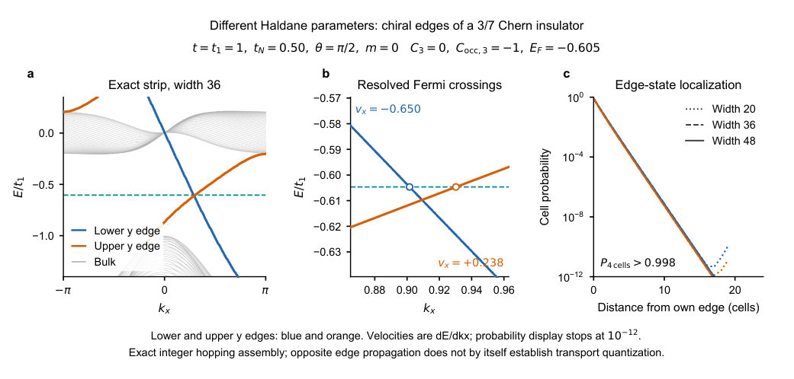
<figcaption class="paper-figure-caption"><b>Fig 5.</b> FIG. 5. Clean boundary spectral flow of the honeycomb NNN model at t = t1 = 1, t2 = 0.5, θ = π/2, and m = 0. This parameter set differs from Fig. 4: the central band has C3 = 0, while the occupied lower-three-band group has Clow,3 = −1. (a) Spectrum of a strip periodic in x and open in y, assembled directly from the integer real-space hoppings with 36 supercells across its width. Colors resolve the two edges and bulk states; the dashed Fermi level EF = −0.605t1 lies in the bulk lower gap. (b) Magnified crossings near kx = 0.902 and 0.930, with opposite Hellmann–Feynman velocities. (c) Transverse cell probabilities at the two crossings for widths 20, 36, and 48, showing approximately 99.9%...</figcaption>
</figure>
</div>

<p><strong>Summary.</strong> This work analyzes how topological properties, specifically Chern numbers, emerge when modifying a parent lattice characterized by exact flat bands. By studying a seven-orbital honeycomb model, the authors demonstrate that bond connectivity and lattice translations dictate which topological bands can stabilize. The findings provide a detailed theoretical framework for designing materials with specific, robust topological electronic properties.</p>
<p><strong>Why it may be interesting.</strong> While focused on condensed matter topology, the rigorous mathematical framework involving band invariants, geometric tensors, and spectral flow is highly relevant to understanding topological phases in engineered quantum systems, including those realized with cold atoms or superconducting circuits.</p>
<details>
<summary>Detailed structure</summary>
<p><strong>Main problem.</strong> The paper investigates the fundamental connection between the existence of flat-band parent structures and the emergence of isolated, topologically non-trivial Chern bands.</p>
<p><strong>Main result.</strong> The topology of the emergent central band is constrained to have even Chern numbers, and the analysis distinguishes between individual-band topology and the more physically relevant occupied-group topology.</p>
<p><strong>Method.</strong> The study combines analytic reductions, Bloch spectral calculations, and the computation of lattice Chern invariants and quantum geometric tensors.</p>
<p><strong>Model / system.</strong> The model is a seven-orbital hopping system defined on a $2	imes 2$ supercell honeycomb-vacancy lattice, analyzed by modifying the hopping connectivity and phases.</p>
<p><strong>Key observables.</strong> Chern numbers ($C$), band gaps ($\Delta$), flatness ratio ($f$), and the occupied-group invariants.</p>
<p><strong>Important parameters / regimes.</strong> Hopping phases ($\phi$), loop amplitudes ($\eta_\phi$), and the specific bond connectivity modifications (e.g., oriented honeycomb NNN extension).</p>
<p><strong>Assumptions / limitations.</strong> The analysis relies on specific hopping choices and the distinction between full band topology and occupied-group topology for determining the Hall response.</p>
<p><strong>Figures summary.</strong> Figures illustrate the honeycomb-vacancy geometry, the parent spectrum showing three flat branches, and the boundary spectral flow for the honeycomb NNN model, highlighting edge-state localization.</p>
<p><strong>Paper structure.</strong> The paper progresses by establishing the parent flat-band structure, analyzing the effect of small intracell-loop hopping, deriving constraints on the resulting Chern numbers, and finally modifying the bond connectivity to generate and characterize the emergent topological bands.</p>
</details>
<details>
<summary>Abstract</summary>
<p>Turning a flat-band parent into an isolated Chern band requires supervise of destructive interference, hopping phases, and the cell translations of the bonds. We study this connection in a seven-orbital 2 times 2 supercell honeycomb-vacancy lattice, combining analytic reductions with Bloch spectra, lattice Chern invariants, and quantum geometry. The parent lattice has three exact flat branches, a smooth periodic zero mode, and a compact localized state. A uniform gap bound shows that faint intracell-loop hopping preserves two topologically trivial insulating gaps. The intracell hopping graph also admits a staggered chiral coloring: reversing site amplitudes according to this coloring links opposite energies at momenta separated by half a reciprocal period. This constraint restricts the isolated central band to even Chern numbers and forbids a zero-energy insulating filling at every loop phase. Purely imaginary loop hopping admits a real gauge, whereas other phases allow paired band contacts connecting central bands with C3=2 and C3=4. On a specified strong-loop cut, third-order masses open the direct gaps; these gaps shrink faster than the bandwidth as the coupling grows. Changing the bond connectivity to an oriented honeycomb next-nearest-neighbor extension generates a narrower Chern band with nonuniform quantum geometry. These results distinguish individual-band topology from occupied-group topology and reveal how bond connectivity and cell translations determine which topological bands can emerge from an exactly flat parent.</p>
</details>
<p><sub><a href="#top">↑ back to top</a></sub></p>

<p><a id="paper-2610.36530"></a></p>
<h3 id="laser-induced-90-degree-magnetization-switching-for-single-element-2d-sensing"><a href="http://arxiv.org/abs/2610.36530v1">Laser-Induced 90-Degree Magnetization Switching for Single-Element 2D Sensing</a></h3>
<p><strong>Authors:</strong> Floris J. F. van Riel, Niels F. L. van Kempen, Bert Koopmans, Diana C. Leitao<br>
<strong>Type:</strong> both · <strong>Category:</strong> other · <strong>PDF:</strong> <a href="https://arxiv.org/pdf/2610.36530v1">https://arxiv.org/pdf/2610.36530v1</a><br>
<strong>Analysis basis:</strong> full PDF text, analyzed in chunks
<strong>Topic relevance:</strong> <code>quantum measurements</code> <strong>2/5</strong></p>
<div class="figure-strip-hint">↔ Scroll figures horizontally</div>
<div class="paper-figures-scroll">
<figure class="paper-figure-card">
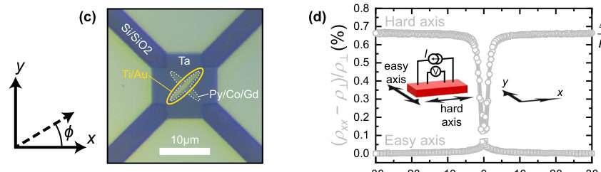
<figcaption class="paper-figure-caption"><b>Fig 1.</b> FIG. 1. (a) Crossed ellipse geometry of the thin film device, with white and black arrows indicating two possible magnetic states of the device. The thick colored arrows labeled Mtot point in the direction of the total net magnetic moment in each state, which is the same direction as the magnetization in the center of the device. Transitioning from one state to the other is achieved by a laser pulse, with the reflective shield leaving one ellipse unaffected and switching the unshielded ellipse by 180◦. (b) Breakdown of the different materials and geometries in the stack. The thin films are patterned with four fabrication steps labeled (i) to (iv) explained in the main text. (c) A true-color...</figcaption>
</figure>
<figure class="paper-figure-card">

<figcaption class="paper-figure-caption"><b>Fig 2.</b> FIG. 2. Measurement of the longitudinal AMR (ρxx) and transversal PHE (ρxy) resistivity changes. (a) AMR response measured in a forward and backward magnetic field sweep, for Hx (red circles) and Hy (purple circles) field directions. The switching field Hswitch = 3.2 mT is indicated. (b) Angle sweeps in the presence of a 100 mT external magnetic field. ρxx is the AMR response (gray circles) and ρxy is the PHE response (black squares). Solid lines are sinusoidal fits of the measured points. A current of 1 mA was used.</figcaption>
</figure>
<figure class="paper-figure-card">

<figcaption class="paper-figure-caption"><b>Fig 3.</b> FIG. 3. (a)-(h) Simulated field response of a two-dimensional sensor with crossed ellipse geometry. Four stable states at zero field are considered, with the total net magnetization Mtot rotating by 90◦between states. A current I is applied in the x-direction and voltages are measured along either the x- or y-direction. For small external fields, the field response of both the AMR (ρxx, gray lines) and PHE (ρxy, black lines) resistivities are simulated and plotted in the graphs in terms of the parameters ¯ρ = (ρ∥+ ρ⊥)/2 and ∆ρ = ρ∥−ρ⊥as indicated in (g). The AMR and PHE signal come mostly from different parts of the cross, as indicated by the dashed gray and black lines for the state M ↓....</figcaption>
</figure>
<figure class="paper-figure-card">

<figcaption class="paper-figure-caption"><b>Fig 4.</b> FIG. 4. Demonstration of 90◦optical switching of the central part of the CE using PHE and a current of 100 µA a.c. With the device initially in the M →state (a), there is no response to an Hx field. After illumination with a single laser pulse, the device is in the M ↑state (b) and there is a positive linear response to Hx. On the other hand, starting in the M ←state (c) with no Hx response, after laser excitation the device ends up in the M ↓state (d) with negative linear Hx response. The dotted lines are the expected slopes based on measurements of the M ↑and M ↓states after manual setting with a permanent magnet.</figcaption>
</figure>
</div>

<p><strong>Summary.</strong> This work presents a novel, single-element magnetic vector sensor that uses an optically switchable thin-film bilayer patterned into a cross shape. By applying a short laser pulse, the device's magnetization can be switched by 90 degrees, enabling the electrical measurement of magnetic field components along two orthogonal axes. This demonstrates a significant step toward integrated, reprogrammable magnetic sensing technology.</p>
<p><strong>Why it may be interesting.</strong> While primarily in condensed matter spintronics, the use of ultrafast laser pulses to deterministically switch magnetic states is highly relevant to the field of quantum optics and open quantum systems, particularly in controlling magnetic moments.</p>
<details>
<summary>Detailed structure</summary>
<p><strong>Main problem.</strong> The goal is to create a single-element, two-dimensional magnetic vector sensor capable of reprogrammably switching its sensing axis on demand using light.</p>
<p><strong>Main result.</strong> The authors demonstrated a proof-of-principle device where a single laser pulse can toggle the magnetization direction by 90 degrees, allowing the electrical measurement of field sensitivity along orthogonal axes (x and y).</p>
<p><strong>Method.</strong> The study combines electrical characterization (AMR and PHE measurements) with theoretical modeling (macrospin and micromagnetic simulations) to predict and verify the switching behavior.</p>
<p><strong>Model / system.</strong> The physical system is an anisotropic magnetoresistive (AMR) sensor built from an optically switchable Co/Gd thin-film bilayer patterned into a cross shape. The behavior is modeled using macrospin approximations and micromagnetic simulations.</p>
<p><strong>Key observables.</strong> AMR signal ($\Delta
ho/
ho_\perp$), Planar Hall Effect (PHE) signal ($
ho_{xy}$), and the angle-dependent field sensitivity along the x and y axes.</p>
<p><strong>Important parameters / regimes.</strong> Laser pulse energy ($\sim 2 \mu	ext{J}$), laser fluence threshold ($\gtrsim 10 	ext{ mJ cm}^{-2}$), and the magnetic anisotropy constants.</p>
<p><strong>Assumptions / limitations.</strong> The analysis relies on macrospin approximations for field response and assumes that the measured resistance changes are dominated by the patterned magnetic film.</p>
<p><strong>Figures summary.</strong> Figures show the crossed ellipse geometry, AMR response curves for sweeping fields along x and y axes, and time evolution of magnetization during optical switching.</p>
<p><strong>Paper structure.</strong> The paper progresses from introducing the need for vector sensors to detailing the device structure, presenting electrical measurements of AMR/PHE, and finally supporting these findings with detailed macrospin and micromagnetic simulations of the 90-degree switching mechanism.</p>
</details>
<details>
<summary>Abstract</summary>
<p>Magnetoresistive sensors with multiaxial sensitivity are interesting for field mapping applications where local measurement of multiple magnetic field components is needed. Existing device designs are often discretized with separate sensing elements for each vector component, or they require complex detection schemes to distinguish the different components. In this work, we showcase a single-element two-dimensional vector sensor with on-demand reprogrammable sensing axis using light and optically switchable materials. Our device is an anisotropic magnetoresistive sensor with $90^\circ$ togglable sensitivity upon excitation with ultrashort laser pulses. The sensor consists of an optically switchable Co/Gd thin-film bilayer, patterned into a cross shape that stabilizes two orthogonal in-plane magnetization directions. By selectively addressing one diagonal of the cross, a single laser pulses toggle switches the magnetization direction in the center of the cross by $90^\circ$. Moreover, the field sensitivity of the device is toggled between the $x$- and $y$-axes, which we detected electrically with the planar Hall effect. Our results form a milestone towards optically reprogrammable integrated magnetic vector sensors.</p>
</details>
<p><sub><a href="#top">↑ back to top</a></sub></p>

<p><a id="paper-2610.36856"></a></p>
<h3 id="magnetic-imaging-with-high-spatial-resolution-using-a-single-niobium-nitride-based-three-dimensional-nanobridge-junction"><a href="http://arxiv.org/abs/2610.36856v1">Magnetic Imaging with High Spatial Resolution Using a Single Niobium-Nitride-Based Three-Dimensional Nanobridge Junction</a></h3>
<p><strong>Authors:</strong> Yinping Pan, Yue Wang, Xinxin Fan, Xu Liu, Shirui Liu, Xiaoyu Liu, Ling Wu, Lu Zhang, Wei Peng, Jie Ren, Jiamin Xiong, Hao Li, Lixing You, Zhen Wang, Lei Chen<br>
<strong>Type:</strong> experiment · <strong>Category:</strong> other · <strong>PDF:</strong> <a href="https://arxiv.org/pdf/2610.36856v1">https://arxiv.org/pdf/2610.36856v1</a><br>
<strong>Analysis basis:</strong> full PDF text, analyzed in chunks
<strong>Topic relevance:</strong> <code>quantum measurements</code> <strong>2/5</strong></p>
<div class="figure-strip-hint">↔ Scroll figures horizontally</div>
<div class="paper-figures-scroll">
<figure class="paper-figure-card">

<figcaption class="paper-figure-caption"><b>Fig 1.</b> Figure 1. NbN-based 3D NBJ probe. (a) SEM image of the NBJ probe’s top view. (b) Cross-sectional</figcaption>
</figure>
<figure class="paper-figure-card">

<figcaption class="paper-figure-caption"><b>Fig 2.</b> Figure 2. Magnetic imaging of an Abrikosov vortex. (a) Vortex images at various tip-to-sample</figcaption>
</figure>
<figure class="paper-figure-card">

<figcaption class="paper-figure-caption"><b>Fig 3.</b> Figure 3: Magnetic imaging of Abrikosov vortices under various magnetic fields. (a) The images of</figcaption>
</figure>
<figure class="paper-figure-card">

<figcaption class="paper-figure-caption"><b>Fig 4.</b> Figure 4: Magnetic imaging of superconducting nanowires. (a) Schematic illustration of the</figcaption>
</figure>
<figure class="paper-figure-card">

<figcaption class="paper-figure-caption"><b>Fig 5.</b> Figure 5: (a) Main steps in the fabrication process of the NbN-3D-NBJ probe. (b)Schematic of the</figcaption>
</figure>
</div>

<p><strong>Summary.</strong> The authors developed and utilized a novel Niobium-Nitride-Based Three-Dimensional Nanobridge Junction (NbN-3D-NBJ) probe to overcome resolution limits in magnetic imaging. By measuring the junction's critical current while scanning, they successfully imaged Abrikosov vortices and resolved spacings as small as 80 nm. This demonstrates the probe's potential for ultra-high-resolution magnetic characterization in condensed matter systems.</p>
<p><strong>Why it may be interesting.</strong> This work represents a significant experimental advancement in nanoscale magnetometry, providing a practical, high-resolution tool for studying superconducting phenomena, which is relevant to understanding quantum electrodynamics in condensed matter systems.</p>
<details>
<summary>Detailed structure</summary>
<p><strong>Main problem.</strong> The primary goal is to overcome the fundamental spatial resolution limits of conventional SQUID-based magnetic imaging to achieve nanoscale mapping of magnetic fields.</p>
<p><strong>Main result.</strong> The proposed single Niobium-Nitride-Based Three-Dimensional Nanobridge Junction (NbN-3D-NBJ) probe successfully demonstrated ultra-high spatial resolution, achieving a minimum Full Width at Half Maximum (FWHM) of 530 nm and resolving 80 nm spacings.</p>
<p><strong>Method.</strong> Magnetic field mapping is performed by measuring the critical current ($I_c$) of the NbN-3D-NBJ as it scans over the sample surface, with the resolution being limited by the junction-to-tip distance.</p>
<p><strong>Model / system.</strong> The system utilizes a 3D nanobridge junction fabricated from Niobium-Nitride (NbN) as a highly sensitive magnetic sensor. This probe is used to image magnetic features like Abrikosov vortices in superconducting films.</p>
<p><strong>Key observables.</strong> Critical current ($I_c$) dependence on external magnetic field ($B_z$), Full Width at Half Maximum (FWHM) of vortex images, and magnetic noise level ($100 	ext{ nT}/\sqrt{	ext{Hz}}$).</p>
<p><strong>Important parameters / regimes.</strong> Junction-to-tip distance ($r$), superconducting film material (Niobium), and the ability to resolve spacings down to 80 nm.</p>
<p><strong>Assumptions / limitations.</strong> The current spatial resolution is primarily limited by the physical distance between the junction and the sample tip, rather than the intrinsic properties of the junction itself.</p>
<p><strong>Figures summary.</strong> Figures show SEM images of the probe, cross-sections, and contour maps illustrating the magnetic field dependence of the junction voltage ($V_{	ext{NBJ}}$) and the spatial mapping of vortices and nanowire patterns.</p>
<p><strong>Paper structure.</strong> The paper details the fabrication and setup of the 3D NbN-NBJ probe, presents measurements of its magnetic response, and then applies it to image magnetic vortices and resolve nanoscale superconducting nanowire spacings.</p>
</details>
<details>
<summary>Abstract</summary>
<p>The nanobridge junctions (NBJs) allow the miniaturization of the Superconducting Quantum Interference Device (SQUID) and improve the spatial resolution of scanning SQUID microscopy. However, the SQUID loop diameter imposed a fundamental limit on the resolution. In this work, we proposed a single niobium-nitride-based three-dimensional nanobridge junction (NbN-3D-NBJ) alternative to the nanoSQUID for high-resolution magnetic imaging. The critical current of an NbN-3D-NBJ showed an nearly monotonic dependence on the external magnetic field, enabling nanoscale mapping of the magnetic field distribution by measuring the junction's critical current with an intrinsic noise level of 100 nT/Hz^1/2. Using a NbN-3D-NBJ probe, we successfully imaged an Abrikosov vortex in a niobium film with a minimal full width at half maxima (FWHM) of 530 nm, constrained by the distance from the junction to the probe tip edge. Furthermore, we resolved 80 nm spacings between the superconducting nanowires utilizing a second probe with an optimized junction-to-tip distance. Thus, the single 3D NbN NBJ probe has been demonstrated as an effective approach for magnetic imaging with ultra-high spatial resolution.</p>
</details>
<p><sub><a href="#top">↑ back to top</a></sub></p>

<p><a id="paper-2610.36614"></a></p>
<h3 id="ferron-driven-motion-of-non-collinear-ferroelectric-domain-walls"><a href="http://arxiv.org/abs/2610.36614v1">Ferron-driven motion of non-collinear ferroelectric domain walls</a></h3>
<p><strong>Authors:</strong> Huanhuan Yang, Gerrit E. W. Bauer<br>
<strong>Type:</strong> theory · <strong>Category:</strong> other · <strong>PDF:</strong> <a href="https://arxiv.org/pdf/2610.36614v1">https://arxiv.org/pdf/2610.36614v1</a><br>
<strong>Analysis basis:</strong> full PDF text, analyzed in chunks
<strong>Topic relevance:</strong> <code>Frenkel-Kontorova</code> <strong>1/5</strong> · <code>Keldysh / 2PI / non-Gaussian methods</code> <strong>1/5</strong> · <code>driven-dissipative phase transition</code> <strong>1/5</strong> · <code>interference shaping light</code> <strong>1/5</strong> · <code>methods for driven-dissipative</code> <strong>1/5</strong> · <code>non-equilibrium universality</code> <strong>1/5</strong></p>
<div class="figure-strip-hint">↔ Scroll figures horizontally</div>
<div class="paper-figures-scroll">
<figure class="paper-figure-card">

<figcaption class="paper-figure-caption"><b>Fig 1.</b> Fig. 1. (a) Illustration of a 90◦head-to-tail DW in a ferro- electric film (top) and the corresponding effective 1D model along ˆu (bottom). (b) DW energy σ versus anisotropy ratio κ = β2/β1. Gray line: 180◦Ising-wall energy. Black curves: energy of two 90◦-DWs. Insets: px(u) vs. py(u) textures nor- mal to the DW. (c) Polarization profile of a balanced 90◦DW for κ = 3 with px + py = ps. (d) Fixed-modulus 90◦DW for κ = 1.05 (|p| = ps).</figcaption>
</figure>
<figure class="paper-figure-card">

<figcaption class="paper-figure-caption"><b>Fig 2.</b> Fig. 2. (a) 90◦DW with longitudinal and transverse excita- tions and laboratory (u, v) as well as local (x, y) coordinate systems. (b) Transverse optical phonon dispersions in a uni- form domain for κ = 3 (black) and κ = 2.9 (purple). The longitudinal ferron branch (dashed line) does not depend on κ and coincides with the transverse one for κ = 3. (c) Rel- ative phase shift ∆φ(k) (black, left axis) and transmission amplitude ratio χ∥(k) (blue, right axis) of an incident ferron (longitudinal mode). (d) Normalized transmission amplitudes δpu and δpv of an incoming ferron at f = 3.5 THz (left) and the amplitudes in the lattice system δpx and δpy (right).</figcaption>
</figure>
<figure class="paper-figure-card">

<figcaption class="paper-figure-caption"><b>Fig 3.</b> Fig. 3. (a) Spatial profiles of δpx,y and δpu,v at t = 500 ps after activating a longitudinal ferron source with f = 3.5 THz at us = −200 nm. (b) Fourier spectrum of δpu(u, t) on the left (gray) and right (brown) sides of the DW. The extra peak on the right indicates partial conversion of the incoming longitu- dinal mode to a transverse mode with different wave number. (c) DW velocities as a function of amplitude for longitudinal (green) and transverse (blue) incident modes. Symbols are obtained from numerical simulations of the DW velocity. In- set: time dependent DW position under the conditions in (a). (d) DW velocity as a function of incident ferron frequencies for δpin = 0.002 C/m2.</figcaption>
</figure>
<figure class="paper-figure-card">

<figcaption class="paper-figure-caption"><b>Fig 4.</b> Fig. 4. (a) Schematic of a transverse phonon (θ-mode). (b) Frequency dispersions of the longitudinal ferrons (black) and θ-mode (purple) in the limit of weak anisotropy (κ = 1.05). (c) DW position versus time for different drive amplitudes ey0 = Ey0/(|α|ps) at f = 1 THz. The gray segment marks the linear-fitting window used to approximate the steady state DW velocity at a source-wall distance of L = 100 nm. (d) DW position versus time for different driving frequencies at fixed amplitude ey0 = 0.1. (e) DW velocity dependence on the drive frequency and electric-field amplitude. Dots correspond to the DW velocities extracted from (c) and (d) in the vicinity of u = −100 nm.</figcaption>
</figure>
</div>

<p><strong>Summary.</strong> This paper theoretically models how ferroelectric domain walls move when excited by electric polarization waves (ferrons). It shows that the non-collinear nature of the wall allows for a measurable driving force due to mode conversion, which scales with input intensity. This mechanism offers pathways for controlling DW motion for potential THz device applications.</p>
<p><strong>Why it may be interesting.</strong> The work connects fundamental concepts of wave propagation (beam splitting, mode conversion) in ferroelectrics to macroscopic dynamics (DW motion), which is relevant for understanding energy dissipation and control in solid-state quantum devices.</p>
<details>
<summary>Detailed structure</summary>
<p><strong>Main problem.</strong> The study investigates the motion of non-collinear ferroelectric domain walls (DWs) when driven by the propagation of ferrons, the quanta of electric polarization waves.</p>
<p><strong>Main result.</strong> The non-collinear nature of the DW allows for a finite driving force ($\Delta J_P$) via mode conversion, which scales linearly with incident wave intensity, enabling THz device functionalities.</p>
<p><strong>Method.</strong> The authors employ analytic and numerical calculations, linearizing the Landau-Khalatnikov-Tani (LKT) equations and using a collective-coordinate ansatz for the DW center.</p>
<p><strong>Model / system.</strong> The system models ferroelectric materials with $90^\circ$ domain walls, governed by the Ginzburg-Landau-Devonshire free energy functional. The dynamics are analyzed by treating the DW motion as a response to momentum-flux imbalances from incident ferrons.</p>
<p><strong>Key observables.</strong> Momentum-flux imbalance ($\Delta J_P$), DW center dynamics ($\ddot{U}$), transmission amplitude ratio ($\chi_\parallel(k)$), and source-seeking velocity ($\dot{U}_{	ext{sat}}$).</p>
<p><strong>Important parameters / regimes.</strong> Weak-anisotropy limit ($\kappa 	o 1+$), incident wave intensity, and the damping coefficient ($\Gamma_{	ext{DW}}$).</p>
<p><strong>Assumptions / limitations.</strong> The analysis relies on the lowest-order collective-coordinate ansatz for the DW profile and assumes linear response to the ferron current.</p>
<p><strong>Figures summary.</strong> Figures illustrate $90^\circ$ DW profiles in different anisotropy regimes, dispersion relations showing mode splitting, and time-series data demonstrating DW velocity driven by ferron intensity.</p>
<p><strong>Paper structure.</strong> The paper first establishes the physical mechanism where the DW acts as a beam splitter for ferron/phonon modes, leading to a driving force ($\Delta J_P$). It then analyzes the dynamics in the weak-anisotropy limit, showing both momentum-transfer driven motion and a separate source-seeking motion driven by dissipation-induced gradient forces.</p>
</details>
<details>
<summary>Abstract</summary>
<p>We study the propagation of ferrons, the quanta of electric polarization waves, through a ferroelectric texture. We predict by analytic and numerical calculations that a $90^\circ$ domain wall (DW) operates as a beam splitter of longitudinal ferron and transverse optical phonon modes. An associated momentum-flux imbalance leads to forces that drive DW motion. In the weak-anisotropy limit, the DW becomes a rotating texture with nearly fixed-modulus, whose low-energy dynamics is described by a sine-Gordon equation. A ferron source then attracts the DW through a damping-induced force. Both driving forces scale linearly with incident wave intensity. Our results uncover qualitatively different routes to driven ferroelectric DW motion enabled by the vector nature of the polarization and offer functionalities for THz ferroelectric devices.</p>
</details>
<p><sub><a href="#top">↑ back to top</a></sub></p>

<p><a id="paper-2610.36501"></a></p>
<h3 id="spin-charge-conversion-in-an-epitaxial-kagome-flat-band-metal"><a href="http://arxiv.org/abs/2610.36501v1">Spin-Charge Conversion in an Epitaxial Kagome Flat-Band Metal</a></h3>
<p><strong>Authors:</strong> Wenyi Zhou, Yuqing Zhu, Katherine Johnson, Hari Paudyal, Duy Nguyen, Dimitri King, Jaden Ma, Jay A. Gupta, Michael E. Flatte, Roland K. Kawakami<br>
<strong>Type:</strong> both · <strong>Category:</strong> other · <strong>PDF:</strong> <a href="https://arxiv.org/pdf/2610.36501v1">https://arxiv.org/pdf/2610.36501v1</a><br>
<strong>Analysis basis:</strong> full PDF text, analyzed in chunks
<strong>Topic relevance:</strong> <code>Keldysh / 2PI / non-Gaussian methods</code> <strong>1/5</strong> · <code>analog quantum simulation</code> <strong>1/5</strong> · <code>quantum measurements</code> <strong>1/5</strong></p>
<div class="figure-strip-hint">↔ Scroll figures horizontally</div>
<div class="paper-figures-scroll">
<figure class="paper-figure-card">

<figcaption class="paper-figure-caption"><b>Fig 1.</b> FIG. 1. Sample properties and characterization. (a) Atomic structure of the CoSn unit cell. (b) Calculated band structure (left) and atom-projected density of states (DOS) (right) for the CoSn, calculated with the inclusion of spin- orbit coupling (SOC). (c) RHEED pattern of a 35 nm c-plane CoSn film on an MgO(111) substrate. (d) RHEED pattern of a 20 nm Pt(111) film on an Al2O3(0001) substrate.</figcaption>
</figure>
<figure class="paper-figure-card">

<figcaption class="paper-figure-caption"><b>Fig 2.</b> FIG. 2. STM results of c-plane CoSn measured at 4.5 K. (a) Large-area topograph of a 35 nm CoSn film on MgO(111) substrate (V = +1 V, Iset = 80 pA). (b) Atomic-resolution image of the Co3Sn-terminated surface (V = −1 V, Iset = 5 nA). (c) Average dI/dV spectrum obtained from ten spectra acquired along the orange line in the top panel of (d). Spectra were taken at fixed height stabilized at V = −1 V, Iset = 6 nA. Shading denotes the standard deviation across the ten spectra. Dashed lines mark flat-band 1 (∼−0.1 V) and flat-band 2 (∼−0.25 V). (d) Top: topograph of the mapped region (V = −1 V, Iset = 6 nA). Below: constant-current dI/dV maps of the same area at the indicated sample biases.</figcaption>
</figure>
<figure class="paper-figure-card">

<figcaption class="paper-figure-caption"><b>Fig 3.</b> Figure 3a shows the magneto-optical measurement of the spin-charge conversion efficiency, following Fan et al. [20] and Lyalin et al. [21], and is outlined in the fol- lowing. In a bilayer of a ferromagnetic (FM) layer (e.g., Ni) and a spin-orbit (SO) layer (e.g., CoSn, Pt), a cur-</figcaption>
</figure>
<figure class="paper-figure-card">

<figcaption class="paper-figure-caption"><b>Fig 4.</b> FIG. 3. DL-SOT detected by current-modulated polar MOKE. (a) Schematic of experimental setup for using polar MOKE to detect the DL-SOT. An ac current through the sample along the x direction generates DL-SOT, which rotates the magnetization a small angle out-of-plane, which is detected by MOKE using a lock-in amplifier. (b) An example of a line scan across the channel of Ni/CoSn (5/35 nm) device, with the ac current density jc = 5.65 × 109 A/m2 applied to the channel. (c) The half sum [θK(+85 mT) + θK(−85 mT)]/2 of the current modulated MOKE voltages shown in (b) that corresponds to the out-of-plane Oersted field. (d) The half difference of the current modulated MOKE voltages shown in (b)...</figcaption>
</figure>
<figure class="paper-figure-card">

<figcaption class="paper-figure-caption"><b>Fig 5.</b> FIG. 4. Spin Berry curvature and intrinsic spin Hall conductivity (SHC) of CoSn calculated from the Wannier- interpolated electronic structure including spin–orbit coupling (SOC). (a) Occupied-state spin Berry curvature components evaluated at the Fermi energy. The pronounced momentum dependence, including sharp features along the Γ–A direc- tion, reflects SOC-mediated interband mixing in the CoSn electronic structure. (b) Corresponding intrinsic SHC ten- sor components as a function of energy relative to the Fermi level. The strong energy and tensor dependence of the calcu- lated SHC demonstrates the sensitivity of the intrinsic spin Hall response to the electronic structure near the Fermi...</figcaption>
</figure>
</div>

<p><strong>Summary.</strong> This work demonstrates highly efficient spin-charge conversion in epitaxial CoSn, a Kagome flat-band metal, by measuring a large spin Hall angle. The findings, supported by DFT calculations elucidating Berry curvature, establish these materials as superior candidates for next-generation, low-power spintronic devices.</p>
<p><strong>Why it may be interesting.</strong> While focused on condensed matter magnetism/spintronics, the strong coupling between electronic structure (flat bands, Berry curvature) and transport properties provides a rich platform for understanding topological effects in quantum materials, which has parallels to topological quantum computing concepts.</p>
<details>
<summary>Detailed structure</summary>
<p><strong>Main problem.</strong> The study investigates the often-unexplored spin transport properties and spin-charge conversion efficiency in epitaxial Kagome flat-band metals.</p>
<p><strong>Main result.</strong> The authors found a significantly large effective spin Hall angle ($   heta_{SH} = 0.484$) in CoSn, substantially exceeding that of control materials like Pt, establishing Kagome metals as promising candidates for low-power spintronics.</p>
<p><strong>Method.</strong> The research combines experimental measurements (STM, magneto-optical torque measurements) with theoretical calculations (DFT) to characterize spin-orbit coupling effects.</p>
<p><strong>Model / system.</strong> The primary system is CoSn, a flat-band Kagome metal, studied in epitaxial thin films, often configured in bilayers with ferromagnetic metals like Ni.</p>
<p><strong>Key observables.</strong> Effective spin Hall angle ($   heta_{SH}$), Spin-Orbit Torque (SOT), spin Berry curvature components ($\Omega$), and intrinsic Spin Hall Conductivity (SHC) tensor components ($\sigma$).</p>
<p><strong>Important parameters / regimes.</strong> The high anisotropy of charge transport (in-plane vs. out-of-plane resistivity) and the comparison between $    heta_{SH}$ in CoSn vs. Pt are key parameters.</p>
<p><strong>Assumptions / limitations.</strong> The intrinsic SHC calculation is noted to be limited in direct comparison to the measured effective $    heta_{SH}$ due to unmodeled interface and extrinsic effects.</p>
<p><strong>Figures summary.</strong> Figures illustrate the atomic structure and electronic signatures (STM/dI/dV) of CoSn, alongside theoretical plots showing the momentum dependence of spin Berry curvature and the energy dependence of intrinsic SHC components.</p>
<p><strong>Paper structure.</strong> The paper progresses from characterizing the electronic structure (flat bands via STM/DFT) to measuring the spin-charge conversion efficiency (SOT measurements) and finally providing a microscopic understanding of the enhancement via DFT calculations of Berry curvature and SHC.</p>
</details>
<details>
<summary>Abstract</summary>
<p>The formation of topological flat bands near the Fermi level in kagome-structured metals has generated substantial research interest. One key consequence of this electronic structure is the strong anisotropy in charge transport, such as the significantly higher in-plane resistivity relative to the out-of-plane direction. However, the spin transport properties of these flat-band kagome metals are still largely unexplored. In this work, we investigate spin-charge conversion in CoSn, a representative flat-band kagome metal. Scanning tunneling microscopy is employed to image the CoSn surface with atomic resolution, and $dI/dV$ spectroscopy shows clear signatures of the flat bands. Using magneto-optical techniques, we quantify the spin-orbit torque (SOT) in bilayers of ferromagnetic nickel (Ni) and c-plane CoSn thin films. We find a large effective spin Hall angle of $θ_{SH} = 0.484 \pm 0.005$ within the CoSn layers, significantly exceeding the value measured for Pt of $θ_{SH} = 0.0436 \pm 0.0003$ in Ni/Pt bilayers. Density functional theory (DFT) calculations provide a microscopic understanding of the intrinsic spin Hall effect in CoSn, elucidating the sources of Berry curvature in momentum space. These findings establish kagome metals as promising materials for efficient spin-charge conversion and low-power spintronics.</p>
</details>
<p><sub><a href="#top">↑ back to top</a></sub></p>

<p><a id="paper-2610.36995"></a></p>
<h3 id="structural-supermodulation-enables-resonant-raman-determination-of-crystalline-orientation-in-bi2sr2cacu2o8x-flakes"><a href="http://arxiv.org/abs/2610.36995v1">Structural supermodulation enables resonant Raman determination of crystalline orientation in Bi2Sr2CaCu2O8+x flakes</a></h3>
<p><strong>Authors:</strong> Flavia Lo Sardo, Tommaso Confalone, Shreya Kumbhakar, Genda Gu, Ahmad Omar, Christian G. F. Blum, Daniel Wolf, Davide Massarotti, Francesco Tafuri, Axel Lubk, Kornelius Nielsch, Nicola Poccia, Golam Haider<br>
<strong>Type:</strong> experiment · <strong>Category:</strong> strongly correlated electrons · <strong>PDF:</strong> <a href="https://arxiv.org/pdf/2610.36995v1">https://arxiv.org/pdf/2610.36995v1</a><br>
<strong>Analysis basis:</strong> full PDF text, analyzed in chunks
<strong>Topic relevance:</strong> <code>interference shaping light</code> <strong>1/5</strong> · <code>quantum measurements</code> <strong>1/5</strong></p>
<div class="figure-strip-hint">↔ Scroll figures horizontally</div>
<div class="paper-figures-scroll">
<figure class="paper-figure-card">

<figcaption class="paper-figure-caption"><b>Fig 1.</b> FIG. 1. (a) Schematic of Bi-2212 unit cell; (b) Laue diffraction pattern of a bulk Bi-2212 single crystal. The colored dotted lines define the angular reference frames at 0°, 45°, 90°, and 135° (indicated in red, purple, brown, and blue, respectively); (c) Simplified schematic of the polarized Raman experimental geometry. The dash-dotted red line marks the 0° reference axis determined by Laue diffraction. The double-headed green arrow represents the in-plane polarization direction of the incident laser beam, while θ denotes the rotation of the polarized light; (d) Polarized Raman spectra highlighting the ∼27 cm−1 acoustic mode and ∼118 cm−1 c-axis vibration of Bi/Sr; (e) Angular dependence...</figcaption>
</figure>
<figure class="paper-figure-card">

<figcaption class="paper-figure-caption"><b>Fig 2.</b> FIG. 2. (a) HAADF-STEM image of the Bi-2212 crystal structure with view along the [100] zone axis obtained from a 45° cross-sectional cut. The red rectangle highlights the pe- riodic, wave-like SM of the BiO atomic layers. The brightest spots are identified with Bi atoms; (b) HAADF-STEM image of the same crystal with view along the [010] zone axis (cross sectional cut at 135°). The red rectangle highlights the Bi atoms along the a-axis; (c) Angular dependence and corre- sponding sinusoidal fits of the ∼27 cm−1 acoustic mode (pur- ple) intensity due to the SM along b and ∼118 cm−1 (black) c-axis vibration due to the vertical modulation.</figcaption>
</figure>
<figure class="paper-figure-card">

<figcaption class="paper-figure-caption"><b>Fig 3.</b> FIG. 3. (a, c, e) Optical microscope images of the exfoli- ated Bi-2212 flake (thickness ∼100 nm) showing the polarizer (P) and analyzer (A) configurations selected to isolate the different symmetry channels relative to the crystal axes. (a) Parallel geometries aligned at 14◦ (yy) and 104◦ (xx); (c) Crossed geometry aligned at 14◦/104◦ (xy); (e) Crossed ge- ometry rotated to 59◦/149◦ (x′y′); (b, d, f) Polarized Raman spectra acquired at a 532 nm excitation wavelength within the isolated symmetry channels: (b) Raman spectra related to parallel configurations xx and yy, (d) crossed configuration xy, and (f) crossed configuration x′y′.</figcaption>
</figure>
<figure class="paper-figure-card">

<figcaption class="paper-figure-caption"><b>Fig 4.</b> FIG. 4. (a–c) Color maps displaying the intensity profiles of the isolated low-frequency Raman modes as a function of the polarization rotation angle over a 180° range, recorded with a 532 nm excitation wavelength; (a) The ∼27 cm−1 SM-driven mode, showing maximum intensity at 45° (purple dashed line) and near-complete suppression at 135° (blue dashed line); (b) Coexisting spectral windows of the ∼52 cm−1 and ∼61 cm−1 excitations; the former mimics the angular response of the ∼27 cm−1 peak, whereas the structural ∼61 cm−1 mode exhibits nearly isotropic behavior; (c) The ∼118 cm−1 vibrational mode, displaying a pronounced angular modulation in counter phase to the ∼27 and ∼52 cm−1...</figcaption>
</figure>
</div>

<p><strong>Summary.</strong> This work introduces a novel, non-destructive technique using polarized resonant Raman spectroscopy to determine the crystal orientation of $  ext{Bi-2212}$ superconducting flakes. By analyzing the angular dependence and wavelength sensitivity of specific vibrational modes, the authors successfully assign the crystallographic axes by linking the signal anisotropy to the material's structural supermodulation. This rapid tool is vital for advancing device engineering in cuprate van der Waals heterostructures.</p>
<p><strong>Why it may be interesting.</strong> The technique provides a powerful, optically accessible tool to probe the symmetry and electronic coupling mechanisms in highly anisotropic, correlated superconducting materials, which is relevant for understanding charge transport in quantum devices.</p>
<details>
<summary>Detailed structure</summary>
<p><strong>Main problem.</strong> The primary challenge is accurately determining the crystallographic orientation (assigning the a and b axes) of strongly anisotropic $   ext{Bi}<em 8_x="8+x">2   ext{Sr}_2   ext{CaCu}_2 ext{O}</em>$) flakes, which is critical for engineering quantum devices.}$ ($    ext{Bi-2212</p>
<p><strong>Main result.</strong> The authors successfully developed a rapid, non-destructive method using polarized resonant Raman spectroscopy to map the crystal axes by correlating mode anisotropies with structural supermodulation propagation.</p>
<p><strong>Method.</strong> The study combines polarized resonant Raman spectroscopy with complementary structural characterization techniques like Laue diffraction and HAADF-STEM on the same bulk crystal.</p>
<p><strong>Model / system.</strong> The physical system is $    ext{Bi-2212}$, a $d$-wave superconductor known for its strong structural anisotropy and the presence of an incommensurate structural supermodulation ($    ext{SM}$) along the $b$ axis.</p>
<p><strong>Key observables.</strong> The intensity maximum of the $\sim 27 	ext{ cm}^{-1}$ $    ext{SM}$ mode, the counter-phase variation of the $\sim 118 	ext{ cm}^{-1}$ $    ext{Bi/Sr}$ mode, and the polarization contrast of these modes as a function of excitation laser wavelength.</p>
<p><strong>Important parameters / regimes.</strong> Laser wavelengths (458, 532, 660 nm); the structural supermodulation wave vector; and the relative intensity variations between the $a$ and $b$ axes.</p>
<p><strong>Assumptions / limitations.</strong> The anisotropy observed in the Raman signal is fundamentally linked to an electronic resonance induced by the structural supermodulation, rather than solely static lattice symmetry.</p>
<p><strong>Figures summary.</strong> Figures illustrate the $   ext{Bi-2212}$ unit cell, Laue diffraction patterns defining angular references, and plots showing the angular dependence of the $\sim 27 	ext{ cm}^{-1}$ and $\sim 118 	ext{ cm}^{-1}$ modes, correlating these with STEM images showing the supermodulation pattern.</p>
<p><strong>Paper structure.</strong> The paper establishes the difficulty of orienting $    ext{Bi-2212}$ flakes, presents the methodology combining polarized Raman with structural probes, details the analysis showing the $b$-axis assignment via mode correlation, and concludes by validating the technique for accessing symmetry channels.</p>
</details>
<details>
<summary>Abstract</summary>
<p>Bi2Sr2CaCu2O8+x (Bi-2212) is a d-wave superconductor with unconventional properties intrinsic to the material itself. These properties are of growing interest for quantum technologies in electronics and photonics, and twisted Josephson junctions can make direct use of them. However, Bi-2212 is strongly anisotropic, and it is challenging to find its crystal axes in flakes in advance, which limits device engineering. Here, we show that polarized resonant Raman spectroscopy reveals the orientation of both the a and b axes of Bi-2212 optically and non-destructively. By correlating Laue diffraction, HAADF-STEM and polarized Raman scattering on the same bulk crystal, we assign the b axis, along which the incommensurate structural supermodulation propagates, to the intensity maximum of the 27 cm-1 supermodulation mode, which varies in counter-phase with the 118 cm-1 Bi/Sr mode, along the a axis. Multi-wavelength measurements (458, 532, 660 nm) show that resulting in-plane contrast peaks at 532 nm and nearly vanishes at 660 nm, indicating that the anisotropy originates from an electronic resonance induced by the supermodulation. Using this resonance, we determine the crystallographic axes of exfoliated flakes and access their symmetry channels, providing a rapid orientation tool for cuprate van der Waals heterostructures.</p>
</details>
<p><sub><a href="#top">↑ back to top</a></sub></p>

<p><a id="paper-2610.36468"></a></p>
<h3 id="beyond-geometry-hole-edge-atomic-configuration-as-a-design-variable-in-graphyne-kirigami"><a href="http://arxiv.org/abs/2610.36468v1">Beyond Geometry: Hole-Edge Atomic Configuration as a Design Variable in Graphyne Kirigami</a></h3>
<p><strong>Authors:</strong> Guilherme B. Kanegae, Alexandre F. Fonseca<br>
<strong>Type:</strong> theory · <strong>Category:</strong> other · <strong>PDF:</strong> <a href="https://arxiv.org/pdf/2610.36468v1">https://arxiv.org/pdf/2610.36468v1</a><br>
<strong>Analysis basis:</strong> full PDF text, analyzed in chunks
<strong>Topic relevance:</strong> <code>analog quantum simulation</code> <strong>1/5</strong></p>
<div class="figure-strip-hint">↔ Scroll figures horizontally</div>
<div class="paper-figures-scroll">
<figure class="paper-figure-card">

<figcaption class="paper-figure-caption"><b>Fig 1.</b> Figure 1: (a) Kirigami pattern employed in this study with key geometric parameters labeled. C and H atoms are represented in orange and black, respectively. Atoms highlighted in blue were displaced rigidly during simulations. (b, c) Atomic configurations at the hole edges, terminated by (b) an acetylenic linkage or (c) a benzene ring.</figcaption>
</figure>
<figure class="paper-figure-card">

<figcaption class="paper-figure-caption"><b>Fig 2.</b> Figure 2: (a) Stress–strain curve of the representative GYK12 structure. The inset shows the stress–strain curve of pristine γ-GY. (b) Two views of a snapshot of the representative GYK12 structure at the end of the second stage of deformation (ε = 0.53), one from above (top) and the other rotated by 90◦(bottom). Atoms are colored according to the normal- ized von Mises stress distribution, as indicated by the color scale. (c) Average out-of-plane displacement (AOD) and total number of C–C bonds as functions of strain. (d) C–C bond length distributions at ε = 0, 0.30, and 0.50. The inset shows a magnification of the right side of the curves. In (a) and (c), the four deformation stages...</figcaption>
</figure>
<figure class="paper-figure-card">

<figcaption class="paper-figure-caption"><b>Fig 3.</b> Figure 3: (a) Stress-strain curves of GYK12 structures with varying number of unit cells. (b) Yield strain (εyield) as a function of the number of unit cells. The inset shows representative snapshots of the 3-, 5-, and 7-cell structures.</figcaption>
</figure>
<figure class="paper-figure-card">

<figcaption class="paper-figure-caption"><b>Fig 4.</b> Figure 4: (a, b) Yield strain (εyield) and (c, d) yield stress (σyield) as a function of α (left) and β (right). Results are normalized by the corresponding value of its pristine counterparts: γ-GY for the GYK structures (squares, triangles, and circles) and graphene for the GRK (stars). The yellow background indicates the region α &lt; 0, where internal and edge cuts do not overlap and the structure behaves as a cut-free nanoribbon without the deformation mechanism illustrated in Figure 2b. Dashed lines are guides to the eye. In all panels the error bars are smaller than the symbol size (≲0.1 in (a, b) and ≲0.002 in (c, d), see Section S5).</figcaption>
</figure>
<figure class="paper-figure-card">

<figcaption class="paper-figure-caption"><b>Fig 5.</b> Figure 5: Effective moduli of the (a, b) first, E1, and (c, d) second, E2, deformation stages as a function of α (left) and β (right). E1 was obtained from a linear fit through the origin over the entire first deformation stage and E2 from a linear fit to the region immediately preceding εyield (see Section S3). Error bars correspond to the standard deviation of the fitted slopes. Dashed lines in (a) and (c) are guides to the eye. Solid lines in (b) and (d) are least-squares fits of E = C1 exp(C2 · β) + C3 to each structure type.</figcaption>
</figure>
</div>

<p><strong>Summary.</strong> This work investigates graphyne kirigami, a material where mechanical stretchability is enhanced by patterned cuts. The authors demonstrate that the atomic arrangement at the cut edges, previously ignored, acts as a crucial, independent design variable. By tuning this hole-edge configuration, they significantly enhance the material's yield strength and overall mechanical performance.</p>
<p><strong>Why it may be interesting.</strong> While the core physics is condensed matter mechanics, the systematic identification of atomic-scale structural variations (hole-edge configuration) as a quantifiable, tunable design parameter is analogous to engineering control over quantum boundary conditions or material interfaces in quantum devices.</p>
<details>
<summary>Detailed structure</summary>
<p><strong>Main problem.</strong> To expand the design space for nanoscale kirigami engineering by identifying the hole-edge atomic configuration as an additional design variable beyond just cut geometry.</p>
<p><strong>Main result.</strong> The mechanical response of graphyne kirigami is governed by both cut geometry and the local hole-edge atomic structure, with edge modification significantly boosting yield strain.</p>
<p><strong>Method.</strong> Molecular Dynamics (MD) simulations were used to model the mechanical response of graphyne kirigami structures under tensile loading.</p>
<p><strong>Model / system.</strong> The study focuses on Graphyne Kirigami (GYK), a porous carbon allotrope, comparing its mechanical behavior to graphene kirigami (GRK). The structure's mechanical properties depend on the cut geometry and the specific atomic arrangement at the cut edges (hole-edge configuration).</p>
<p><strong>Key observables.</strong> Yield strain ($\epsilon_{	ext{yield}}$), yield stress ($\sigma_{	ext{yield}}$), and effective elastic moduli ($E_1, E_2$).</p>
<p><strong>Important parameters / regimes.</strong> Cut geometry parameters ($\alpha, eta$), and the choice of hole-edge atomic configuration (e.g., acetylenic vs. benzene ring).</p>
<p><strong>Assumptions / limitations.</strong> The analysis assumes that the mechanical response can be characterized by distinct deformation stages (flipping, stretching, fracture) and that the effective stiffness can be modeled by fitting the second deformation regime.</p>
<p><strong>Figures summary.</strong> Figures show stress-strain curves, the evolution of bond counts/displacements during deformation, and the dependence of yield strain and effective moduli on geometric parameters ($\alpha$ and $eta$).</p>
<p><strong>Paper structure.</strong> The paper first establishes the physical system and the new design variable (hole-edge configuration). It then uses MD simulations to characterize the mechanical response, analyzing the dependence of yield strain and effective moduli on geometric ratios ($\alpha, eta$) and the specific edge structure.</p>
</details>
<details>
<summary>Abstract</summary>
<p>Kirigami-inspired cuts are an established route to stretchability in two-dimensional materials. At the nanoscale, however, cut edges are not purely geometric: they comprise discrete atomic configurations that can alter the mechanical response. In graphene, a given cut geometry fixes the edge structure; graphyne, a porous carbon allotrope with an intrinsic band gap, lifts this constraint, as identical cut geometries can yield distinct hole-edge configurations. Using molecular dynamics simulations, we report the first atomistic study of $γ$-graphyne kirigami (GYK), and compared with graphene kirigami. GYK reaches yield strains up to 9.6 times that of pristine $γ$-graphyne, with a response governed by both cut geometry and local hole-edge structure. Removing just two carbon atoms at selected edge sites further raises the yield strain by up to 35%, with little loss of yield stress. These findings identify hole-edge atomic configuration as an additional design parameter, expanding the design space for nanoscale kirigami engineering.</p>
</details>
<p><sub><a href="#top">↑ back to top</a></sub></p>

<p><a id="paper-2610.36891"></a></p>
<h3 id="large-number-of-hyperbolic-and-periodic-solutions-of-sine-gordon-equation-with-nontrivial-time-dependence"><a href="http://arxiv.org/abs/2610.36891v1">Large number of hyperbolic and periodic solutions of sine-Gordon equation with nontrivial time dependence</a></h3>
<p><strong>Authors:</strong> Thokala Soloman Raju, T. Shreecharan, Avinash Khare, Avadh Saxena<br>
<strong>Type:</strong> theory · <strong>Category:</strong> other · <strong>PDF:</strong> <a href="https://arxiv.org/pdf/2610.36891v1">https://arxiv.org/pdf/2610.36891v1</a><br>
<strong>Analysis basis:</strong> full PDF text, analyzed in chunks
<strong>Topic relevance:</strong> <code>Frenkel-Kontorova</code> <strong>1/5</strong></p>
<div class="figure-strip-hint">↔ Scroll figures horizontally</div>
<div class="paper-figures-scroll">
<figure class="paper-figure-card">

<figcaption class="paper-figure-caption"><b>Fig 1.</b> FIG. 1. A surface plot depicting the periodic two-soliton solution (21) of SGE for the parameter values A = 0.3, n = 0.2, and m = 0.8.</figcaption>
</figure>
<figure class="paper-figure-card">

<figcaption class="paper-figure-caption"><b>Fig 2.</b> FIG. 2. A surface plot depicting another periodic two-soliton solution Eq. (25) of SGE for the parameter values A = 0.3, n = 0.2, and m = 0.5.</figcaption>
</figure>
<figure class="paper-figure-card">

<figcaption class="paper-figure-caption"><b>Fig 3.</b> FIG. 3. A surface plot depicting the novel superposed periodic two-soliton solution (29) of SGE for the parameter values A = 0.3, n = 0.2, m = 0.8, D = A, and E = B.</figcaption>
</figure>
<figure class="paper-figure-card">

<figcaption class="paper-figure-caption"><b>Fig 4.</b> FIG. 4. A surface plot depicting periodic soliton-antisoliton Sol. (40) of SGE for the parameter values A = 0.3, n = 0.2, and m = 0.8.</figcaption>
</figure>
<figure class="paper-figure-card">

<figcaption class="paper-figure-caption"><b>Fig 5.</b> FIG. 5. A surface plot depicting another periodic soliton-antisoliton Sol. (45) of SGE for the parameter values A = 0.3, n = 0.2, and m = 0.8.</figcaption>
</figure>
</div>

<p><strong>Summary.</strong> This paper provides an extensive mathematical study of the Sine-Gordon equation, focusing on finding numerous exact solutions with time-dependent behavior. By reducing the problem to coupled first-order equations using specific ansatze, the authors derive periodic and superposed solutions, including complex PT-invariant forms. This work significantly expands the known solution space for this fundamental nonlinear wave equation.</p>
<p><strong>Why it may be interesting.</strong> While the SGE is often studied in contexts like Josephson junctions (AMO/cond-mat), the rigorous mathematical derivation of a large family of periodic and superposed solutions using advanced techniques is valuable for understanding integrable nonlinear wave phenomena.</p>
<details>
<summary>Detailed structure</summary>
<p><strong>Main problem.</strong> The primary goal is to derive a large number of exact hyperbolic and periodic solutions for the Sine-Gordon equation (SGE) when the equation exhibits nontrivial time dependence.</p>
<p><strong>Main result.</strong> The authors successfully obtained various types of solutions, including periodic two-soliton, soliton-antisoliton, and breather solutions, as well as complex PT-invariant superposed solutions.</p>
<p><strong>Method.</strong> The methodology involves employing specific ansatze to reduce the complex SGE problem into solving two coupled, first-order, $\phi^4$-like differential equations in the spatial and temporal coordinates.</p>
<p><strong>Model / system.</strong> The physical model is the Sine-Gordon equation (SGE): $\phi_{xx} - \phi_{tt} = \sin(\phi)$. The analysis extends to related systems like the Sine Hyperbolic-Gordon Equation (SHGE).</p>
<p><strong>Key observables.</strong> The solutions themselves, such as the two-soliton, soliton-antisoliton, and breather profiles, and their periodic superpositions.</p>
<p><strong>Important parameters / regimes.</strong> Parameters like $A, n, m, \beta, \gamma$, and the constraints imposed by the coupling constants $J$ and $J-1$.</p>
<p><strong>Assumptions / limitations.</strong> The derivation relies on imposing specific ansatze (e.g., $\phi = 4 \tan^{-1} \sqrt{F(x)G(t)}$) and making assumptions to decouple the coupled differential equations.</p>
<p><strong>Figures summary.</strong> The figures illustrate surface plots of various periodic solutions, including the periodic two-soliton solution (Eq. 21, 25), novel superposed solutions (Eq. 29), and periodic breather/soliton-antisoliton profiles.</p>
<p><strong>Paper structure.</strong> The paper proceeds by establishing the coupled first-order equations governing the ansatz functions $F(x)$ and $G(t)$. It then solves these equations using specific functional forms (hyperbolic or elliptic functions) to generate different classes of solutions, culminating in the presentation of various periodic and superposed solutions.</p>
</details>
<details>
<summary>Abstract</summary>
<p>By using suitable ansatz which reduces the problem of obtaining exact solutions of the sine-Gordon equation with nontrivial time dependence to obtaining exact solutions of two first order symmetric $φ^4$-like coupled equations in $x$ and $t$, we obtain a large number of hyperbolic and periodic solutions of the sine-Gordon equation. In particular, we not only obtain the well-known two-soliton, soliton-antisoliton and the breather solutions but also obtain periodic two-soliton, periodic soliton-antisoliton as well as periodic breather solutions. Besides, we also obtain superposed real and complex (parity-time reversal or) $\mathcal{PT}$-invariant solutions related to the two-soliton, soliton-antisoliton and the breather solutions of the sine-Gordon equation.</p>
</details>
<p><sub><a href="#top">↑ back to top</a></sub></p>

<p><a id="paper-2610.36482"></a></p>
<h3 id="nano-nb-superconducting-3d-josephson-junctions-arrays-in-cu-normal-matrix-superconducting-phase-coherence-and-quantum-fluctuations-properties"><a href="http://arxiv.org/abs/2610.36482v1">Nano-Nb Superconducting 3D Josephson Junctions Arrays in Cu-Normal Matrix: Superconducting Phase Coherence and Quantum Fluctuations Properties</a></h3>
<p><strong>Authors:</strong> R. L. de Almeida, J. Albino Aguiar, J. A. H. Coaquira<br>
<strong>Type:</strong> both · <strong>Category:</strong> other · <strong>PDF:</strong> <a href="https://arxiv.org/pdf/2610.36482v1">https://arxiv.org/pdf/2610.36482v1</a><br>
<strong>Analysis basis:</strong> full PDF text, analyzed in chunks
<strong>Topic relevance:</strong> <code>interference shaping light</code> <strong>1/5</strong></p>
<div class="figure-strip-hint">↔ Scroll figures horizontally</div>
<div class="paper-figures-scroll">
<figure class="paper-figure-card">

<figcaption class="paper-figure-caption"><b>Fig 1.</b> Figure 1: Photo showing samples Cuxwt%Nb-11-02 (a) and the sample Cuxwt%Nb - 10-01 (b) immediately after they are melted in the arc furnace. If we look closely at the sample Cuxwt%Nb-11-02 (a) we perceive a typical brightness that is not characteristic of Cu (even this sample has x=80 % by weight of Cu). Microscopy images scanning revealed the migration of the Nb to the regions of the sample: &quot;cocoon effect&quot;.</figcaption>
</figure>
<figure class="paper-figure-card">

<figcaption class="paper-figure-caption"><b>Fig 2.</b> Figure 2: Photo showing samples Cuxwt%Nb-11-02 (a) and Cuxwt%Nb-10-01 (b) ready tobe measured in the scanning electron microscope.</figcaption>
</figure>
<figure class="paper-figure-card">

<figcaption class="paper-figure-caption"><b>Fig 3.</b> Figure 3: Electron microscopy images of sample scanning Cuxwt%Nb-10-01). As can be seen, the beam energy used for this image was Eel=30kV , the mode of obtaining the images was that of electrons backscatter. The grains of Nb in the Cu matrix dimensions smaller than 1 μm. .</figcaption>
</figure>
<figure class="paper-figure-card">

<figcaption class="paper-figure-caption"><b>Fig 4.</b> Figure 4: Electron microscopy image of scan showing the microstructure of the sample in more detail Cuxwt%Nb - 10-01. How can be the energy of the beam used for this image wasEel=30kV , the mode of obtaining the images was that of electrons backscatter. The grains of Nb in the Cu matrix have smaller dimensions than 1 μm.</figcaption>
</figure>
<figure class="paper-figure-card">

<figcaption class="paper-figure-caption"><b>Fig 5.</b> Figure 5: Electron microscopy images of scan showing the sample microstructure Cuxwt%Nb – witha better distribution of grains along the matrix. Through our analysis we obtainedthe following microstructural results found in the graph of the figure 6:</figcaption>
</figure>
</div>

<p><strong>Summary.</strong> This work investigates superconducting properties in granular $    ext{Cu-Nb}$ alloys, treating them as arrays of Josephson junctions embedded in a normal metal. By measuring transport and magnetic responses, the authors confirm the existence of two distinct superconducting transitions, attributing one to the bulk grains and the other to the weak coupling between them. The results provide quantitative parameters for the Josephson coupling and evidence of quantum interference effects.</p>
<p><strong>Why it may be interesting.</strong> The study provides experimental evidence of quantum interference effects (oscillations) in a mesoscopic superconducting network, which is relevant to understanding phase coherence and quantum fluctuations in disordered superconducting systems.</p>
<details>
<summary>Detailed structure</summary>
<p><strong>Main problem.</strong> To investigate the complex interplay between microstructural evolution, phase separation, superconducting phase coherence, and quantum fluctuations in granular superconducting systems.</p>
<p><strong>Main result.</strong> The system exhibits a clear signature of a double superconducting transition ($T_c(H)$ and $T_{cJ}(H)$), confirming it is composed of superconducting grains weakly coupled within a normal matrix.</p>
<p><strong>Method.</strong> The study combines advanced structural characterization (SEM) with comprehensive magnetotransport and magnetic susceptibility measurements (MPMS/PPMS).</p>
<p><strong>Model / system.</strong> The physical system is a Cu-Nb granular superconductor ($   ext{Cu}_x   ext{wt\%Nb}$), where superconducting Nb precipitates are embedded in a normal Cu matrix. The behavior is modeled using effective medium-field theory.</p>
<p><strong>Key observables.</strong> Two distinct transition temperatures ($T_c(H)$ and $T_{cJ}(H)$), double transition signatures in magnetization/transport, and quantum interference oscillations in critical current ($I_c$).</p>
<p><strong>Important parameters / regimes.</strong> Critical fields ($H_{c1J} \approx 100 	ext{ Oe}$, $H_{c2J} \approx 200 	ext{ Oe}$), and an oscillation period of $H_{	ext{perio}} \approx 24 	ext{ Oe}$.</p>
<p><strong>Assumptions / limitations.</strong> The analysis assumes the system can be modeled as a collection of superconducting grains immersed in a non-superconducting matrix, and that the grain spacing is regular.</p>
<p><strong>Figures summary.</strong> Figures show microstructures revealing Nb precipitates and plots illustrate the field-dependent critical current ($I_c$) exhibiting small oscillations modulated by the external field.</p>
<p><strong>Paper structure.</strong> The paper progresses from establishing a systematic method for sample preparation (rapid cooling) to detailed structural characterization, followed by comprehensive magnetotransport and magnetic susceptibility measurements to diagnose the superconducting coupling mechanisms.</p>
</details>
<details>
<summary>Abstract</summary>
<p>To address the complex interplay of microstructural evolution, phase separation, superconductivity coherence and quantum fluctuations, we prepared Cuxwt%Nb series of granular samples by rapidly cooling, where the niobium concentration varied (x = 3, 5, 15, 20). By employing this method, we successfully obtained samples characterized by well-defined precipitates of niobium, featuring regular sizes and grain spacing. The goal was to establish a systematic and robust method approach for obtaining samples with different of sub-micrometric precipitates distributions but also to investigate their superconducting properties. Structural characterization by optical and Scanning Electron Microscopy, dc Mdc[H,T] ac inductive , as well the magneto-transport measures rhodc[H,T], Rdc[V,I.H,T], I[V,H,T] and [H,T,I] were done. Also, using a micro Hall sensor with 10 measuring transverse voltage bridges regularly distributed, we were able to obtain the real external applied magnetic field value inside of the chamber sample space. Thus e studied the dependence of configuration of the Nb grains in the superconducting coupling order parameter properties that connects the grains superconductors to the normal Cu matrix. We verify through magnetization and transport measures the signature of the double transition. This, when we apply current of different intensities, in the transport measures, and different field values, in the inductive measures. This behavior is an indication that our system is made up of by a collection of superconducting grains immersed in a well-organized in a non-superconducting matrix. The results indicate that the superconducting properties of these systems are manifested usually through two transition temperatures Tc(H) e TcJ(H).</p>
</details>
<p><sub><a href="#top">↑ back to top</a></sub></p>

<p><a id="paper-2610.37581"></a></p>
<h3 id="water-at-the-molecular-frontier"><a href="http://arxiv.org/abs/2610.37581v1">Water at the molecular frontier</a></h3>
<p><strong>Authors:</strong> Mischa Bonn, Marie-Laure Bocquet, Andre Geim, Laura Fumagalli, Angelos Michaelides, Lyderic Bocquet<br>
<strong>Type:</strong> both · <strong>Category:</strong> other · <strong>PDF:</strong> <a href="https://arxiv.org/pdf/2610.37581v1">https://arxiv.org/pdf/2610.37581v1</a><br>
<strong>Analysis basis:</strong> full PDF text, analyzed in chunks
<strong>Topic relevance:</strong> <code>non-equilibrium universality</code> <strong>1/5</strong></p>
<div class="figure-strip-hint">↔ Scroll figures horizontally</div>
<div class="paper-figures-scroll">
<figure class="paper-figure-card">

<figcaption class="paper-figure-caption"><b>Fig 1.</b> Figure 1. Several important water-related technologies rely on the molecular properties of nanoscale water, including water purification, desalination, selective ion transport, and hydrogen generation from water. Despite the apparent technological impact of understanding nanoscale water, many fundamental insights are lacking. A fundamental, molecular-level understanding of nanoscale water is expected to enable novel, clever technologies beyond the current capabilities. We argue that the bottleneck for new technologies is our limited understanding of nanoscale water.</figcaption>
</figure>
<figure class="paper-figure-card">

<figcaption class="paper-figure-caption"><b>Fig 2.</b> Figure 2. A cabinet of curiosities for the structure and dielectric response of nanoconfined water. A. Simulations predict rich phase behaviour for monolayer water29. B. SFG of nanoconfined water in a graphene/CaF2 slit reveals that only below about 1 nm are genuine nanoconfinement effects observed10. C. Capillary condensation can happen in a step-wise (layer-by-layer) manner34. D. Both the in-plane and out-of-plane dielectric constants of nanoconfined water can deviate significantly from the bulk value13,14. Kelvin in disguise Capillary condensation is usually regarded as a well-understood macroscopic phenomenon, one that governs how water fills the smallest gaps in solids, rocks, powders,...</figcaption>
</figure>
<figure class="paper-figure-card">

<figcaption class="paper-figure-caption"><b>Fig 3.</b> Figure 3. Big transport changes in small spaces. A. Evidence for rapid proton conduction in carbon nanotube channels80. B. Illustration of the Grotthuss mechanism of proton transport driving proton transport in (superionic) water81. C. Exquisitely precise nanochannels can probe proton transfer rates in a single layer of nanoconfined water59. D. High in-plane ionic conductivity of nanoconfined water14. E. Water flows rapidly through carbon nanotubes but not through hBN nanotubes3.</figcaption>
</figure>
</div>

<p><strong>Summary.</strong> This perspective reviews the emerging field of water physics at the molecular frontier, where confinement in nano-channels drastically alters properties compared to bulk water. By integrating data from advanced spectroscopy, nanofluidics, and machine-learning simulations, the authors argue that a fundamental molecular understanding is needed to predict and engineer water-based technologies. This work is crucial for understanding everything from desalination to biological function.</p>
<p><strong>Why it may be interesting.</strong> The study of water's dielectric response and ion transport under extreme confinement touches upon non-equilibrium statistical mechanics and complex many-body dynamics, offering insights into how boundary conditions fundamentally alter bulk material properties.</p>
<details>
<summary>Detailed structure</summary>
<p><strong>Main problem.</strong> The central challenge is understanding the physical properties of water when confined to nano- and molecular-scale environments, as bulk continuum models fail to capture the true behavior.</p>
<p><strong>Main result.</strong> Water exhibits complex, confinement-dependent behaviors—ranging from structural reshaping and anomalous transport to dielectric anisotropy—requiring a molecular-level understanding that goes beyond simple renormalization of bulk properties.</p>
<p><strong>Method.</strong> The field advances through a convergence of atomically precise nanofluidic experiments, advanced spectroscopies (like SFG), and high-fidelity simulations utilizing machine-learning potentials.</p>
<p><strong>Model / system.</strong> The focus is on water confined in various nanoscale geometries, such as graphene slits, nanopores, and biological membranes. The models range from continuum hydrodynamics to atomistic molecular dynamics simulations.</p>
<p><strong>Key observables.</strong> Structure, dynamics, dielectric response ($\epsilon_{\perp}, \epsilon_{\parallel}$), ionic conductivity ($\sigma$), and hydrogen-bond dynamics.</p>
<p><strong>Important parameters / regimes.</strong> Confinement strength (pore width), wall material properties (compliance), and temperature/pressure regimes.</p>
<p><strong>Assumptions / limitations.</strong> The paper argues against viewing nanoscale effects as isolated anomalies, suggesting a unified molecular regime must be established.</p>
<p><strong>Figures summary.</strong> Figures illustrate the crossover between interface-dominated and confinement-dominated regimes, showing predicted phase diagrams and measured dielectric constant deviations.</p>
<p><strong>Paper structure.</strong> The perspective reviews the limitations of bulk theories, presents evidence from multiple experimental and simulation platforms (nanofluidics, spectroscopy, ML simulations), and concludes by outlining the necessity of a molecular-level framework.</p>
</details>
<details>
<summary>Abstract</summary>
<p>Much of the water that matters most - flowing through biological cells and membranes, percolating through soils and rocks, or processed by filtration and desalination technologies - is not bulk water. It is water in nano- and molecular-scale confinement or at interfaces. Nanoscale water is therefore central to many challenges of our time, from the global water crisis and the water-energy nexus to catalysis, electrochemistry, and health. Beyond its applications, nanoscale water has emerged as a rich scientific field in its own right: discoveries are accumulating rapidly, revealing that confinement and interfacial forces produce a range of behaviours absent in the bulk. Sometimes this amounts to a renormalization of bulk properties; in other cases, new and non-intuitive phenomena emerge - exotic phases, anomalous transport, and dielectric responses that defy continuum expectations. A convergence of atomically precise nanofluidic devices, novel spectroscopies and microscopy approaches, and machine-learning-accelerated simulations is now exposing the molecular mechanisms behind these behaviours. This Perspective argues that the recent findings should not be viewed as isolated nanoscale anomalies, but as evidence for a molecular regime of water in which continuum descriptions must be rethought and molecular-level understanding becomes essential. Recognising and exploring this regime should have consequences ranging from fundamental physics to the rational design of future technologies that rely on water and dissolved ions.</p>
</details>
<p><sub><a href="#top">↑ back to top</a></sub></p>
<h3 id="other-secondary-papers-6">Other secondary papers (6)</h3>
<details>
<summary>Show other secondary papers</summary>

<p><a id="paper-2610.36479"></a></p>
<h3 id="a-pathway-to-improve-nbmath1128mathsn-for-srf-accelerator-cavities-via-zr-inclusion"><a href="http://arxiv.org/abs/2610.36479v1">A pathway to improve Nb$_3$Sn for SRF accelerator cavities via Zr inclusion</a></h3>
<p><strong>Authors:</strong> M. Tripathi, M. S. Shakel, J. Lee, H. E. Elsayed-Ali, S. Posen, G. V. Eremeev<br>
<strong>Type:</strong> experiment · <strong>Category:</strong> other · <strong>PDF:</strong> <a href="https://arxiv.org/pdf/2610.36479v1">https://arxiv.org/pdf/2610.36479v1</a><br>
<strong>Analysis basis:</strong> full PDF text, analyzed in chunks</p>
<div class="figure-strip-hint">↔ Scroll figures horizontally</div>
<div class="paper-figures-scroll">
<figure class="paper-figure-card">

<figcaption class="paper-figure-caption"><b>Fig 1.</b> FIG. 1. Cross-sectional STEM characterization of a representative Nb3Sn:Zr film with 23.6 at.% Zr. (a) Bright-field STEM image. (b) Enlarged view of the region marked by the dashed rectangle in (a). The yellow line indicates the path of the EDS line scan. (c) EDS line profiles of the Nb-L, Zr-L, Sn-L and O-K signals along the line in (b), across the two precipitates.</figcaption>
</figure>
<figure class="paper-figure-card">

<figcaption class="paper-figure-caption"><b>Fig 2.</b> FIG. 2. Comparative X-ray diffraction profiles for Nb3Sn thin films with Zr concentration varying from 0 at%-10.6 at% : (a) 2θ −ω scans for Nb3Sn thin films with Zr concentration varying from 0 at%-10.6 at%, (b) Peak profile of feature attributed to Nb5Sn6/NbSn2 (c) Peak profile of Nb3Sn (200) with variable Zr concentration (d) Pole-figure measurements of Nb3Sn with four different concentration values with respect to Nb χ (200) plane. (e) Illustration of Nb3Sn and Nb crystal structure along with planer orientations. (f) Intensity distribution of in χ −ϕ scan along Nb (200) direction.</figcaption>
</figure>
<figure class="paper-figure-card">

<figcaption class="paper-figure-caption"><b>Fig 3.</b> FIG. 3. Cross-sectional HAADF-STEM images of Nb3Sn films with (a) ≈0 at.% Zr and (b) ≈25 at.% Zr, with the corresponding EDS maps (Nb Lα, Sn Lα, Zr Lα and O Kα) of the regions marked by the dashed rectangles. (a) All signals decrease across the large irregular regions, identifying them as voids; the contrast in the Zr Lα map arises from overlap with the Nb Lα line. (b) The Zr and O signals increase and the Nb and Sn signals decrease across the dark regions, identifying them as ZrO2 precipitates.</figcaption>
</figure>
<figure class="paper-figure-card">

<figcaption class="paper-figure-caption"><b>Fig 4.</b> FIG. 4. Secondary-electron SEM images (scan area 4 µm × 3 µm) showing the evolution of the surface morphology of Nb3Sn films with Zr content: (a) 0, (b) 2.6, (c) 10.6, (d) 19.2, (e) 23.6 and (f) 24.8 at.% Zr. The insets show 0.6 µm × 0.6 µm areas.</figcaption>
</figure>
<figure class="paper-figure-card">

<figcaption class="paper-figure-caption"><b>Fig 5.</b> FIG. 5. (a): Resistivity as a function of temperature for Nb3Sn films with different Zr concentrations, the schematic illustrates the FIB defined current channels for transport measurements shows.(b) The variation of ρ(T) curves in the close vicinity of superconducting transition temperature for Zr concentration varying from 0-4.5 at%. (c, d) R(H) curves for samples with 0.6 at% Zr and 23.6 at% Zr, respectively, measured at temperatures T ≤TC. (e) Measured HC2 values as a function of temperature, along with extrapolation of the data points to estimate the 0 K value of HC2.</figcaption>
</figure>
</div>
<p><strong>Summary.</strong> This research investigates using Zirconium (Zr) doping during co-sputtering to enhance Nb3Sn films for use in high-performance SRF accelerator cavities. By analyzing microstructure and surface chemistry, the authors demonstrate that optimal Zr inclusion reduces material defects and stabilizes the surface oxide layer. This makes Nb3Sn:Zr a promising candidate for advancing superconducting accelerator technology.</p>
<p><strong>Why it may be interesting.</strong> While focused on condensed matter superconductivity for accelerator physics, the detailed analysis of material defects, interface chemistry, and phase stability using advanced characterization techniques (like depth profiling) provides valuable insights into complex solid-state material engineering relevant to quantum device fabrication.</p>
<details>
<summary>Detailed structure</summary>
<p><strong>Main problem.</strong> The primary goal is to improve the superconducting performance of Nb3Sn for use in high-field Superconducting Radio-Frequency (SRF) accelerator cavities.</p>
<p><strong>Main result.</strong> Incorporating Zirconium (Zr) via co-sputtering significantly improves the material quality by reducing surface and bulk voids and forming a thinner surface niobium oxide layer.</p>
<p><strong>Method.</strong> The study employs co-sputtering of Nb, Sn, and Zr, followed by extensive characterization using STEM, SEM, XPS, and ToF-SIMS.</p>
<p><strong>Model / system.</strong> The physical system is Nb3Sn superconducting films grown on substrates, with the modification achieved by doping with Zr. The analysis focuses on the resulting microstructure, phase separation (e.g., ZrO2 precipitates), and superconducting properties.</p>
<p><strong>Key observables.</strong> Surface morphology (void density), superconducting properties (Q0, critical current), elemental composition (Zr concentration), and oxide layer thickness.</p>
<p><strong>Important parameters / regimes.</strong> Atomic fraction of Zr, operating magnetic fields (multi-tesla), and temperature dependence of superconducting parameters.</p>
<p><strong>Assumptions / limitations.</strong> The improvement in performance is directly linked to the structural changes induced by Zr, such as void reduction and oxide layer modification.</p>
<p><strong>Figures summary.</strong> Figures show cross-sectional STEM characterization of Nb3Sn:Zr films, illustrating precipitate formation and elemental distribution across the film stack.</p>
<p><strong>Paper structure.</strong> The paper follows a structure of problem identification (SRF cavity limitations), material modification (Zr co-sputtering), detailed characterization (microstructure, chemistry, surface analysis), and concluding with the identification of the optimized material system.</p>
</details>
<details>
<summary>Abstract</summary>
<p>Nb$_3$Sn has the potential to exceed the performance of niobium-based superconducting radio-frequency (SRF) cavities, both in particle accelerators and in high-$Q_0$ cavities operating in multi-tesla magnetic fields for axion dark matter searches. We studied how the incorporation of Zr into the Nb$_3$Sn matrix by co-sputtering affects the microstructure and superconducting properties of Nb$_3$Sn films. As the atomic fraction of Zr increased, the surface morphology improved and the bulk and surface void densities decreased. At the optimal Zr content, the superconducting properties improved and a thinner surface niobium oxide formed. These results identify co-sputtered Nb$_3$Sn:Zr as a promising material to advance the performance limits of SRF cavities.</p>
</details>
<p><sub><a href="#top">↑ back to top</a></sub></p>
<hr>
<p>
<a href="index.html">← Index</a>
 · <a href="papers_06.html">← Previous</a> · <a href="papers_08.html">Next →</a>
</p>
<hr>

</body>
</html>
